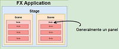
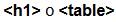
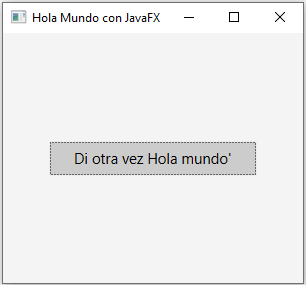
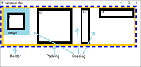
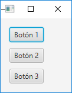
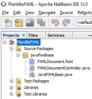

Ministerio de Educación. Uso educativo-nc. Elaboración propia
Ana está cursando el módulo de Programación.
En el aula suele sentarse junto a su compañero Ricardo.
En clase llevan unos días explicándoles cómo construir aplicaciones Java, utilizando interfaces gráficas de usuario (GUI).
Pero, ¿qué es una interfaz de usuario? A grandes rasgos, les han comentado que una interfaz de usuario es el medio con que el usuario puede comunicarse con una computadora. Las interfaces gráficas de usuario incluyen elementos tales como: menús, ventanas, paneles, etc., en general, elementos gráficos que facilitan la comunicación entre el ser humano y la computadora.
Hasta ahora, las aplicaciones de ejemplo que habían realizado, estaban en modo consola, o modo carácter, y están contentos porque están viendo las posibilidades que se les abren ahora. Están comprobando que podrán dar a sus aplicaciones un aspecto mucho más agradable para el usuario. Ana le comenta a Ricardo:
—Así podremos dar un aspecto profesional a nuestros programas.
Hoy en día las interfaces de los programas son cada vez más sofisticadas y atractivas para el usuario. Son intuitivas y cada vez más fáciles de usar: pantallas táctiles, etc.
Sin embargo, no siempre ha sido así. No hace muchos años, antes de que surgieran y se popularizaran las interfaces gráficas para que el usuario interactuara con el sistema operativo con sistemas como Windows, etc., se trabajaba en modo consola, o modo carácter, es decir, se le daban las ordenes al ordenador con comandos por teclado, de hecho, por entonces no existía el ratón. Es lo que se conoce como interfaces de línea de comandos (CLI).
Así que, con el tiempo, con la idea de simplificar el uso de los ordenadores para extender el uso a un cada vez mayor espectro de gente, de usuarios de todo tipo, y no sólo para los expertos, se ha convertido en una práctica habitual utilizar interfaces gráficas de usuario (IGU ó GUI en inglés), para que el usuario interactúe y establezca un contacto más fácil e intuitivo con el ordenador.
En ocasiones verás otras definiciones de interfaz, como la que define una interfaz como un dispositivo que permite comunicar dos sistemas que no hablan el mismo lenguaje. También se emplea el término interfaz para definir el juego de conexiones y dispositivos que hacen posible la comunicación entre dos sistemas.
Aquí en esta unidad, cuando hablamos de interfaz nos referimos a la cara visible de los programas tal y como se presenta a los usuarios para que interactúen con la máquina. La interfaz gráfica implica la presencia de un monitor de ordenador, en el que veremos la interfaz constituida por una serie de menús e iconos que representan las opciones que el usuario puede tomar dentro del sistema.
En este tema, veremos JavaFX, que es una plataforma de software para el desarrollo y distribución de aplicaciones de Internet enriquecidas (RIA) que pueden ejecutarse en una amplia variedad de dispositivos.
JavaFX es por tanto el kit de herramientas GUI de última generación para la plataforma Java. Estaba completamente integrado con versiones como la 8 de de Java SE Runtime Environment (JRE) y el Java Development Kit (JDK), pero en marzo de 2018 Oracle anunció que sacaría JavaFX del JDK debido a que está evolucionando más rápidamente el lenguaje en sí, que JavaFX, que va más lento en su evolución.
En una RIA, la presentación gráfica se gestiona en el lado del cliente y la manipulación de datos se lleva a cabo en el lado del servidor.
Ricardo está un poco abrumado por la cantidad de componentes y clases que posee JavaFX para desarrollar interfaces gráficos. Piensa que hay tantos, que son tantas clases, que nunca podrá aprendérselos. Ana le dice:
—Ricardo, no te preocupes, seguro que haciendo programas enseguida ubicarás los que más utilices, y el resto, siempre tienes la documentación de Java para consultarla cuando dudes.
Hemos visto que la interfaz gráfica de usuario es la parte del programa que permite al usuario interaccionar con él. Pero, ¿cómo la podemos crear en Java?
Al principio, el primer sistema de Java para mostrar interfaces de usuario basadas en ventanas en Java. De ahí surgió Swing, que triunfó rápidamente y a partir de Java SE 7 Update 6, Oracle JavaFX es la tecnología indicada para desarrollar aplicaciones. Desde entonces, JavaFX formó parte del JDK para facilitar el desarrollo de aplicaciones de interfaz de usuario y proporciona un rico conjunto de API para desarrollo de gráficos y contenidos multimedia. Oracle anunció que JavaFX sustituiría a Swing. Aunque Swing todavía era compatible con Java 8 y será compatible con un futuro cercano, Swing estará obsoleto en poco tiempo.
En el esquema podemos ver la arquitectura de JavaFX. Los elementos principales son:
Prism. Debajo de las API públicas de JavaFX se encuentra el motor que ejecuta el código JavaFX, es un motor gráfico de alto rendimiento para gráficos 2D y 3D.
Glass windowing toolkit, es el nuevo sistema de ventanas, que constituye una capa que conecta JavaFX al sistema operativo nativo. Proporciona servicios nativos del sistema operativo, como la administración de ventanas, eventos, temporizadores, etc.
Media engine, proporciona herramientas para crear aplicaciones multimedia que permiten la reproducción de medios en la ventana del escritorio o dentro de una página web en plataformas compatibles.
Web engine, es un motor de navegador web que admite HTML5, CSS, JavaScript, DOM y SVG.
Ana presta atención en sus clases, pero especialmente más desde que han empezado a estudiar la tecnología JavaFX. Quiere comprender todo sin que se le escape detalle y desde el primer momento, así que se sienta siempre en las primeras filas de clase.
Es un cambio en la forma de programar que han visto hasta ahora y hay un montón de conceptos nuevos que debe asimilar desde el principio y sentar bien las bases, dada la complejidad del tema.
Las aplicaciones usan la API pública de JavaFX para construir el grafo de escena (Scene Graph), que es la representación jerárquica de la interfaz. Por debajo hay una serie de componentes, que hemos visto en el esquema anterior, no accesibles sobre los que se apoya JavaFX.
Normalmente, una aplicación JavaFX consta de un escenario (Stage) y una escena (Scene):
Stage es un contenedor de alto nivel, la ventana principal de la aplicación, representa la ventana del sistema operativo. En el caso de aplicaciones embebidas en un navegador web, sería el área rectangular principal. En el caso de aplicaciones de escritorio, el stage será la ventana, con su barra de título, y botones de maximizar, minimizar o cerrar.
Scene es el contenedor donde se aloja el grafo de escena.
Frecuentemente, se suele poner como ejemplo para entender estos conceptos, el hecho de ver el stage como un escenario o teatro en el que se desarrollan escenas. Así, el stage es un espacio, y una escena define qué sucede en ese espacio. Un stage es el contenedor de nivel superior, que como mínimo consta de una escena, que a su vez contiene otros elementos.
El grafo de escena constituye una estructura jerárquica que contiene la descripción de los elementos que forman la interfaz gráfica. Está formado por nodos dispuestos en un orden jerárquico.
Este árbol jerárquico de nodos representa todos los elementos visuales del interfaz de usuario de la aplicación JavaFX.
Cada elemento de un grafo de escena es un nodo. Salvo el nodo raíz (root node) que es el primer nodo del árbol y no tiene padres, tenemos dos tipos de nodos:
Nodo contenedor, de tipo Parent, que contienen otros nodos hijos.
Podemos manipular la escena modificando propiedades de un nodo. De esta forma, podemos animar nodos, aplicar efectos, hacer transformaciones o cambiar su opacidad, etc.
Cualquier nodo de un grafo de escena hereda de la clase base Node, y existen otras clases que heredan directa o indirectamente de Node, como Parent, Group, Region o Control.
Aunque en las primeras versiones de JavaFX, éste iba integrado en el JDK, Oracle decidió a partir de la versión 11 que saldría del JDK. Desde entonces, para poder realizar aplicaciones JavaFX hay que instalar el SDK.
Para crear un proyecto JavaFX con NetBeans, en primer lugar necesitamos descargar el kit de desarrollo de software que nos permita compilar y ejecutar este tipo de aplicaciones.
Por tanto, descargaremos el SDK JavaFX apropiado para nuestro sistema operativo, lo descomprimiremos y ubicaremos en la carpeta que deseemos, por ejemplo en Descargas o donde queramos.
Como ya sabemos, en una aplicación JavaFX los nodos de la escena son los elementos que componen la escena. La clase superior que representa estos nodos, de la que partirá el grafo, por tanto la raíz, es un panel: en este caso vamos a utilizar un StackPane.
Cualquier programa JavaFX debe heredar de la clase Application. Su método start() es el principal punto de entrada de la aplicación: es el primer método que se llama después de que el sistema esté preparado.
Cada aplicación puede tener realmente varios escenarios (Stage), cada escenario varias escenas, la estructura de una aplicación la podemos visualizar en esta imagen.
José Javier Bermúdez Hernández. Uso educativo-nc. Elaboración propia.
Por ejemplo, en este caso de aplicación que acabamos de ver, tendríamos una sola escena y un nodo de la clase StackPane dentro del cual hay un nodo de la clase Label.
package miprimerafx;
import javafx.application.Application;
import javafx.scene.Scene;
import javafx.scene.control.Label;
import javafx.scene.layout.StackPane;
import javafx.stage.Stage;
/**
* Aplicación sencilla que crea una ventana y pone una etiqueta en el medio de
* la ventana con el texto "Hola JavaFX"
*
* @author Profesor
*/
public class MiPrimeraFX extends Application {
/**
* @param args the command line arguments
*/
public static void main(String[] args) {
// TODO code application logic here
launch(args);
}
@Override
public void start(Stage stage) throws Exception {
Label label = new Label("Hola JavaFX") ;
// Crear un panel y añadirlo a la escena
Scene scene = new Scene(new StackPane(label), 640, 480) ;
// Añadir la escena al escenario
stage.setScene(scene);
// Mostrar el escenario
stage.show();
}
}
Ministerio de Educación.Uso educativo-nc. Elaboración propia
Ana ya ha oído hablar de la programación por eventos, y sabe que la clave para manejarla está en utilizar correctamente los eventos más adecuados en cada momento. Ana tiene muy claro que el evento se asocia a un botón cuando se pulsa, pero Ricardo la hace dudar, cuando la llama por teléfono para preguntarle unas dudas y le dice, que él cree, que el evento se produce cuando el botón se suelta. Tras hablar, ambos piensan que realmente no es tan complicado, porque se repiten muchos eventos y si nos paramos a pensarlo, todos ellos son predecibles y bastante lógicos.
Es todo hecho que ocurre mientras se ejecuta la aplicación. Normalmente, llamamos evento a cualquier interacción que realiza el usuario con la aplicación, como puede ser:
pulsar un botón con el ratón;
hacer doble clic;
pulsar y arrastrar;
pulsar una combinación de teclas en el teclado;
pasar el ratón por encima de un componente;
salir el puntero de ratón de un componente;
abrir una ventana;
etc.
¿Qué es la programación guiada por eventos? Imagina la ventana de cualquier aplicación, por ejemplo la de un procesador de textos. En esa ventana aparecen multitud de elementos gráficos interactivos, de forma que no es posible que el programador haya previsto todas las posibles entradas que se pueden producir por parte del usuario en cada momento.
Con el control de flujo de programa de la programación imperativa, el programador tendría que estar continuamente leyendo las entradas (de teclado, o ratón, etc.) y comprobar para cada entrada o interacción producida por el usuario, de cuál se trata de entre todas las posibles, usando estructuras de flujo condicional (if-then-else, switch) para ejecutar el código conveniente en cada caso. Si piensas que para cada opción del menú, para cada botón o etiqueta, para cada lista desplegable, y por tanto para cada componente de la ventana, incluyendo la propia ventana, habría que comprobar todos y cada uno de los eventos posibles, nos damos cuenta de que las posibilidades son casi infinitas, y desde luego impredecibles. Por tanto, de ese modo es imposible solucionar el problema.
Para abordar el problema de tratar correctamente las interacciones del usuario con la interfaz gráfica de la aplicación hay que cambiar de estrategia, y la programación guiada por eventos es una buena solución. Veamos cómo funciona el modelo de gestión de eventos.
¿Qué sistema operativo utilizas? ¿Posee un entorno gráfico? Hoy en día, la mayoría de sistemas operativos utilizan interfaces gráficas de usuario. Este tipo de sistemas operativos están continuamente monitorizando el entorno para capturar y tratar los eventos que se producen.
El sistema operativo informa de estos eventos a los programas que se están ejecutando y entonces cada programa decide, según lo que se haya programado, qué hace para dar respuesta a esos eventos.
Cada vez que el usuario realiza una determinada acción sobre una aplicación que estamos programando en Java (un clic sobre el ratón, presionar una tecla, etc.), se produce un evento que el sistema operativo transmite a Java.
Java crea un objeto de una determinada clase de evento, y este evento se transmite a un determinado método para que lo gestione.
El modelo de eventos de Java está basado en delegación, es decir, la responsabilidad de gestionar un evento que ocurre en un objeto fuente la tiene otro objeto oyente.
Las fuentes de eventos (event sources) son objetos que detectan eventos y notifican a los receptores que se han producido dichos eventos. Ejemplos de fuentes:
Botón sobre el que se pulsa o pincha con el ratón.
Campo de texto que pierde el foco.
Campo de texto sobre el que se presiona una tecla.
Ventana que se cierra.
etc.
Aunque la gestión de eventos se emplea sobre todo para responder a clics de botones, se usa también para dar respuesta a otros tipos de interacciones. Por ejemplo, se puede utilizar para especificar el código que se ejecute cuando el usuario de una aplicación haga una selección en un Combobox, cuando pase el ratón sobre una etiqueta, cuando presione una tecla, etc.
Tradicionalmente, para la programación de interfaces de usuario y la gestión de eventos, se ha trabajado con Swing, pero aunque todavía persiste, está siendo reemplazado por JavaFX. En el siguiente enlace puedes aprender más sobre el modelo de eventos y programación con Swing en Java.
Un evento representa la ocurrencia de algo interesante en la aplicación, como por ejemplo: el ratón moviendose, la pulsación de una tecla, etc. En JavaFX, un evento es una instancia de la clase javafx.event.Event o de cualquier subclase de Event.
JavaFX proporciona una amplia variedad de eventos. Algunos de ellos son:
Mouse Event. Es un evento de entrada que se produce cuando se mueve el ratón o se hace clic en un botón. Está representado por la clase MouseEvent.
Key Event. Es un evento de entrada que se genera cuando una tecla se pulsa o libera. Se representa por la clase KeyEvent.
Drag Event. Es un evento de entrada que se produce cuando se arrastra el ratón. Está representado por la clase DragEvent.
Window Event. Este es un evento relacionado con acciones sobre mostrar y ocultar ventana. Está representado por la clase llamada WindowEvent.
Un evento se utiliza para notificar a tu aplicación sobre acciones emprendidas por el usuario y habilita a la aplicación para responder al evento.
La plataforma JavaFX proporciona la estructura para capturar un evento, dirigir al evento hacia su objetivo, y habilitar a la aplicación para gestionar el evento como sea necesario.
Un objeto que se crea cuando el usuario hace algo con un componente, como hacer clic sobre él.
Fuente de evento (Event source)
Origen del evento. El objeto en el cual ocurrió el evento inicialmente.
Destino de evento (Event target)
El nodo al que se dirige el evento. Normalmente será el botón u otro control sobre el que el usuario hizo click o manipuló. (En la mayor parte de los casos la fuente y el destino de evento son el mismo).
Manejador de evento (Event handler)
El objeto oyente (event-listener) debe implementar el interface EventHandler, que define un método denominado handle. El interface EventHandler está definido en el paquete javafx.event.
Veamos, mediante un ejemplo, cómo trabajar con eventos. En concreto, vamos a ver una sencilla aplicación que tenga un botón, que al pulsar escriba por consola "Hola mundo".
Creamos un nuevo proyecto Java y le damos un nombre, por ejemplo: "Hola Mundo".
El código que escribimos en la clase HolaMundo realmente será muy básico y es el siguiente:
package holamundo;
import javafx.application.Application;
import javafx.event.ActionEvent;
import javafx.event.EventHandler;
import javafx.scene.Scene;
import javafx.scene.control.Button;
import javafx.scene.layout.StackPane;
import javafx.stage.Stage;
/**
* Escribir hola mundo por consola cuando se pulse el botón de la ventana.
*
* @author JJBH
*/
public class HolaMundo extends Application {
@Override
public void start(Stage primaryStage) {
// Crear botón
Button btn = new Button();
// Texto del botón
btn.setText("Escribir 'Hola mundo'");
// Crear manejador de evento para la acción que se debe hacer al clicar
// sobre el botón.
btn.setOnAction(new EventHandler<ActionEvent>() {
@Override
public void handle(ActionEvent event) {
// Escribir por consola
System.out.println("¡Hola mundo!");
}
});
// Crear un panel
StackPane root = new StackPane();
// Añadir el botón al panel.
root.getChildren().add(btn);
// Crear la escena
Scene scene = new Scene(root, 300, 250);
// Dar título al escenario
primaryStage.setTitle("Hola mundo.");
// Añadir la escena al escenario
primaryStage.setScene(scene);
// Mostrar el escenario
primaryStage.show();
}
/**
* @param args the command line arguments
*/
public static void main(String[] args) {
launch(args);
}
}
Como podemos observar en esta aplicación: La función principal de un botón es provocar una acción cuando sea pulsado. Se utiliza el método setOnAction de la clase Button para definir lo que ocurrirá cuando el usuario haga click en el botón. Podemos ver en el ejemplo, que en este caso será escribir por consola: Hello World!.
ActionEvent es un tipo de evento procesado por EventHandler. Un objeto EventHandler proporciona el método manejador para procesar una acción disparada para un botón. En el código anterior vemos cómo sobrescribir el método handle, de manera que cuando el usuario pulse el botón se muestre el texto indicado.
Por lo tanto, podríamos resumir los pasos para manejar eventos en JavaFX en los siguientes tres:
1. Crear una fuente de evento (event source).
Una fuente de evento es un control, como por ejemplo un botón, que puede generar eventos. Por regla general, se declara la variable que hace referencia a la fuente de evento como un campo privado de clase, fuera del método start:
Para crear un manejador de evento, debemos crear un objeto que implemente el interface EventHandler y proporcionar una implementación para el método handle.
3. Registrar el manejador de evento en la fuente del evento.
De este modo, el método handle será invocado cuando ocurra el evento.
Cualquier componente que sirve como fuente de evento proporciona un método que permite registrar manejadores de evento para escuchar eventos. Así, por ejemplo, un control Button nos proporciona un método setOnAction que nos deja registrar un manejador de evento para la acción a realizar.
// Crear manejador de evento para la acción que se debe hacer al clicar sobre el botón y registrarlo en la fuente de evento.
btn.setOnAction(new EventHandler<ActionEvent>(){@Overridepublicvoidhandle(ActionEvent event){// Escribir por consola
System.out.println("¡Hola mundo!");}});
A Ana y Ricardo, hoy en clase les han hablado acerca de cómo cambiar el aspecto de la aplicación gráfica que se quiera desarrollar.
El profesor ha mencionado algunos conceptos que más o menos Ana intuye, pero que todavía no termina de saber del todo lo que son. Algo como "look and feel", experiencia del usuario,...
Con JavaFX puedes utilizar hojas de estilo (CSS) para personalizar el estilo de tus aplicaciones.
Las hojas de estilo suponen un lenguaje sencillo de diseño, cuyo objetivo es simplificar el proceso de elaboración de páginas web.
Mediante las hojas de estilo podemos gestionar el look and feel de nuestra aplicación JavaFX. Es decir, las hojas de estilo contienen definiciones de estilo para controlar el aspecto de los controles de interfaz de usuario y su uso es similar al uso de CSS en HTML.
El look and feel de una aplicación es el aspecto de un sitio para el usuario y lo que siente, la experiencia de uso, al interactuar con él.
El look se define por la paleta de color, las imágenes, el diseño, las opciones de fuente, el diseño general... El feel se determina por los efectos de sonido, la velocidad de carga de las páginas e imágenes, el movimiento y la respuesta de los componentes: menús, botones, formas,...
La hoja de estilo por defecto para las aplicaciones JavaFX es modena.css, ubicado en el fichero jfxrt.jar. Esta hoja de estilo define los estilos para el nodo raíz y los controles de interfaz de usuario.
Hay varios modos de aplicar un estilo CSS a un componente JavaFX:
Las reglas de estilo CSS se interpretan por el navegador y luego se aplican a los elementos correspondientes en el documento.
Una regla de estilo se compone de tres partes:
Selector. Un selector es una etiqueta HTML a la que se aplica un estilo. Podría ser cualquier etiqueta como , etcétera.
Propiedad. Una propiedad es un tipo de atributo de la etiqueta HTML. En términos sencillos, todos los atributos HTML se convierten en propiedades CSS. Podrían ser color, border, etcétera.
Valor. Los valores son asignados a las propiedades. Por ejemplo, una propiedad de color puede tener un valor ya sea red o #F1F1F1, etcétera. .
Se puede poner una regla de estilo con la siguiente sintaxis:
En el siguiente enlace puedes acceder a consultar las guía de referencia, en inglés, de CSS en JavaFX. No es una guía para aprendérsela de memoria, pero sí que nos puede resultar muy útil para consulta.
Es la que acabamos de comentar, que consiste en que se aplica la hoja modena.css.
Esta hoja de estilos se aplica siempre por defecto a cualquier aplicación JavaFX. Pero como vamos a ver en los siguientes apartados, podemos crear hojas de estilo personalizadas y añadirlas a nuestras aplicaciones, de manera que se emplee ese estilo y no el estilo por defecto.
Es el caso del ejemplo del botón mostrado anteriormente, donde el resultado sería el que vemos en la imagen, y donde simplemente escribirá por consola Hola mundo, cuando se pulse en el botón que aparece en el centro de la ventana. Puedes ver el código un poco más abajo.
Un aspecto interesante a resaltar en el código siguiente es la notación lambda que se puede observar para ejecutar la acción del botón. Como ves, se ha comentado cómo se haría lo mismo, pero sin la notación lambda. Esta notación surgió con el JDK8 y simplifica en muchos casos la escritura de código. Como tienes también más abajo el proyecto entero, puedes descargarlo y comentar y descomentar el trozo de código para comprobar que efectivamente funciona exactamente igual el programa con una u otra notación.
En el Anexo I del final de la unidad puedes ver una pequeña introducción a esta característica de Java.
package saludando;
import javafx.application.Application;
import javafx.event.ActionEvent;
import javafx.scene.Scene;
import javafx.scene.control.Button;
import javafx.scene.layout.StackPane;
import javafx.stage.Stage;
/**
* Aplicación que escribe hola mundo por consola, cuando se pulsa un botón.
* @author JJBH
*/
public class Saludando extends Application {
@Override
public void start(Stage primaryStage) {
// Crear un Nodo de clase Button
Button btn = new Button();
// Establecer el texto del botón
btn.setText("Di 'Hola mundo'");
/* Utilizando la notación lambda, establcer la acción del programa
cuando se pulse el botón: escribir por consola un mensaje */
btn.setOnAction((ActionEvent event) -> {
System.out.println("¡Hola mundo!");
});
// Sin notación lambda sería así.
/*btn.setOnAction(new EventHandler() {
@Override
public void handle(Event event) {
System.out.println("¡Hola mundo!");
}
});*/
// Nodo raiz, de clase StackPane
StackPane root = new StackPane();
// Añadimos el botón como hijo de raiz
root.getChildren().add(btn);
// Crear la escena para que contenga la raíz
Scene scene = new Scene(root, 300, 250);
// Establecer el título de la ventana
primaryStage.setTitle("Hola Mundo con JavaFX");
primaryStage.setScene(scene);
primaryStage.show();
}
public static void main(String[] args) {
launch(args);
}
}
Puedes descargar el proyecto completo a continuación:
Puedes establecer una hoja de estilo para un objeto de la clase Scene. La hoja de estilo se aplica en este caso a todos los componentes JavaFX añadidos al grafo de escena para ese objeto. Así, la hoja sobrescribirá los estilos de la hoja por defecto.
De este modo, lo que haríamos sería simplemente lo siguiente:
// Crear la escena para que contenga la raíz
Scene scene = new Scene(root, 300, 250);
// Cargar una hoja de estilo específica
scene.getStylesheets().add("recursos/css/JMetroLightTheme.css");
Este ejemplo le dice a JavaFX que busque un fichero hoja de estilos llamado JMetroLightTheme.css ubicado en la carpeta recursos/css.
José Javier Bermúdez Hernández(Captura de pantalla de la aplicación NetBeans, propiedad de Oracle,bajo licencia GNU GPL v2)
Esa cadena que indica el archivo de hoja de estilo CSS se interpreta como una URL. Esto significa que también podemos especificar rutas completas a un archivo en el sistema de archivos. Sin embargo, es una buena práctica pensar en los archivos CSS como recursos y agruparlos con el código de nuestra aplicación.
Puedes descargar el proyecto completo a continuación, que tal y como el anterior, simplemente escribirá por consola Hola mundo, cuando se pulse en el botón que aparece en el centro de la ventana, pero ahora verás al pulsar el botón cómo cambia ligeramente el aspecto:
También es posible establecer una hoja de estilo CSS en todas las subclases de la clase JavaFX padre. La clase padre es una clase base para todos los componentes que pueden tener hijos, lo que significa que pueden contener otros componentes dentro de ellos. Las propiedades de CSS especificadas en una hoja de estilo establecida en una subclase principal normalmente tendrán prioridad sobre las reglas CSS especificadas en una hoja de estilo de escena y la hoja de estilo predeterminada.
Los componentes de diseño de JavaFX son ejemplos típicos de subclases de Parent. Si establece una hoja de estilo CSS en un componente de diseño, la hoja de estilo se aplicará a todos los componentes dentro de ese componente de diseño.
Establecer una hoja de estilos CSS en una subclase principal es similar a configurarlo en un objeto de la clase Scene. Aquí tenemos un ejemplo de configuración de una hoja de estilo CSS en un VBox. Un VBox es un componente de diseño (layoutlayoutEsquema de distribución de los elementos dentro un diseño.) que coloca todos sus nodos hijos en una fila vertical.
El listado puedes comprobar cómo se añaden dos botones a un panel contenedor VBox, que son los dos que ves en la imagen arriba a la izquierda. Ese VBox es el padre de los dos botones, y también se añade otro botón a la escena. Como se puede observar, no tienen el mismo aspecto, el mismo look and feel, ya que los dos botones tiene el estilo de la hoja de estilo del padre y el botón adicional toma el estilo de la hoja de estilo por defecto:
package javafxconcssespecificapadre;
import javafx.application.Application;
import javafx.scene.Scene;
import javafx.scene.control.Button;
import javafx.scene.layout.StackPane;
import javafx.scene.layout.VBox;
import javafx.stage.Stage;
/**
* Ejemplo donde se usa un layout VBox, al cual se añaden dos botones. Ese vbox
* se añade a la escena.
* @author JJBH
*/
public class JavaFXconCssEspecificaPadre extends Application {
@Override
public void start(Stage primaryStage) {
// Nodo raiz, de clase StackPane
StackPane root = new StackPane();
// Crear un Nodo de clase Button
Button btn = new Button();
// Establecer el texto del botón
btn.setText("Botón que no pertenece al panel VBox");
// Creamos dos botones
Button button1 = new Button("Botón 1");
Button button2 = new Button("Botón 2");
// Añadimos los botones al Vbox
VBox vbox = new VBox(button1, button2);
vbox.getStylesheets().add("recursos/css/JMetroLightTheme.css");
// Añadimos el vbox como hijo de raíz
root.getChildren().add(vbox);
// Añadimos el botón como hijo de raíz. Nótese que éste no es hijo del VBox
root.getChildren().add(btn);
// Crear la escena para que contenga la raíz
Scene scene = new Scene(root, 300, 250);
// Tñtulo de la ventana
primaryStage.setTitle("Prueba Specific Parent CSS");
primaryStage.setScene(scene);
primaryStage.show();
}
/**
* @param args the command line arguments
*/
public static void main(String[] args) {
launch(args);
}
}
Puedes descargar el proyecto completo a continuación. Fíjate que en la estructura del proyecto, en el paquete al que hemos nombrado como recursos.css está el fichero correspondiente a la hoja de estilos.
Si establece una hoja de estilo CSS en un componente de diseño, la hoja de estilo se aplicará a todos los componentes dentro de ese componente de diseño.
Otra opción a la hora de especificar el estilo CSS es estableciéndolo directamente en el componente que deseemos. Así, lo especificaremos mediante una cadena de caracteres que contiene las propiedades CSS a aplicar.
Las propiedades CSS establecidas de este modo tendrán prioridad sobre cualquier otra propiedad CSS especificada a clases padre donde se encuentre el componente, y sobre la hoja de estilos por defecto de la escena.
Por ejemplo, para crear un botón y darle un color de fondo específico haríamos:
// Crear el botón
Button button = new Button("Copiar");
// Aplicarle el estilo
button.setStyle("-fx-background-color: <span class="colorhexspan"><a target="_blank" href="https://www.w3schools.com/colors/color_tryit.asp?hex=FAEBD7">#FAEBD7</a></span>");
El proyecto con la aplicación de la imagen lo puedes descargar de aquí:
Ana sigue aprendiendo conceptos sobre aplicaciones gráficas desarrolladas con JavaFX.
En la clase de hoy, ha aprendido el concepto de contenedor o layout, es decir, el panel sobre el que se van depositando los controles (botones, listas, campos de texto, etc.) que compondrán una ventana.
A Ana le llama la atención la variedad de layouts que ofrece JavaFX. Su compañero Ricardo, que está más suelto con el tema, le está ayudando a entender lo que son y la facilidad de uso.
Los contenedores o paneles de diseño se usan para disponer los controles de interfaz de usuario dentro de un escenario gráfico de una aplicación JavaFX. Cuando una ventana se redimensiona, el layout automáticamente reposiciona y redimensiona los nodos que contiene.
Cada uno de los layout se representa por una clase y todas estas clases pertenecen al paquete javafx.layout. La clase Pane es la clase base de todos los layouts en JavaFX.
La API de JavaFX incluye las siguientes clases de contenedor (container) para gestionar los modelos de disposición (layouts):
Absolute layout: dispone sus nodos en coordenadas absolutas.
HBox: dispone todos los nodos de nuestra aplicación en una fila horizontal.
VBox: organiza sus nodos de contenido verticalmente en una sola columna.
FlowPane: esta clase organiza sus nodos de contenido, ya sea en flujo horizontal o vertical, envolviendo en el ancho especificado para horizontal o bien la altura para vertical de los límites. Este tipo de layout es parecido al HBox y al VBox. Puede ser como cualquiera de los dos, todo depende del constructor.
BorderPane: presenta los nodos en nuestra aplicación en posiciones arriba, izquierda, derecha, abajo y centro.
AnchorPane: es parecido a BorderPane la diferencia radica en que AnchorPane ofrece más libertad para posicionar los elementos
StackPane: agrega sus nodos en una pila, el primer elemento queda debajo del segundo y así sucesivamente.
TilePane: coloca sus nodos de contenido en celdas de tamaño uniforme.
GridPane: permite crear una cuadrícula de filas y columnas en la que disponer el contenido.
Los layouts absolutos se suelen usar sobre todo para posicionar diagramas o imágenes.
Como se ve en el listado de ejemplo de más abajo, se emplea la clase Pane. Se puede utilizar para posicionar nodos en coordenadas absolutas.
En el ejemplo que ves en la imagen, y cuyo código puedes ver más abajo, muestras tres formas: un rectángulo, una línea y un círculo. Las figuras se ubican usando coordenadas absolutas.
public class AbsoluteLayoutEjemplo extends Application {
@Override
public void start(Stage primaryStage) {
Pane root = new Pane();
// Crear rectángulo y rellenarlo de color.
Rectangle rect = new Rectangle(25, 25, 50, 50);
rect.setFill(Color.AQUAMARINE);
// Crear línea de color roja.
Line line = new Line(90, 40, 230, 40);
line.setStroke(Color.RED);
// Crear círculo y rellenarlo de color.
Circle circle = new Circle(130, 130, 30);
circle.setFill(Color.CORNFLOWERBLUE);
// Añadir las figuras como hijos del panel.
root.getChildren().addAll(rect, line, circle);
// Color de fondo de la escena
Scene scene = new Scene(root, 310, 220, Color.WHEAT);
// Establecer el título, la escena y mostrar.
primaryStage.setTitle("Absolute layout");
primaryStage.setScene(scene);
primaryStage.show();
}
}
Este layout nos permite colocar nodos hijos en una fila horizontal.
En el siguiente ejemplo se usan unos controles de tipo Button para ejemplificar el uso de este layout.
Puedes ver el código a continuación con los comentarios que son bastante aclaratorios.
También, más abajo puedes descargar el proyecto completo.
package hboxejemplo;
import javafx.application.Application;
import javafx.geometry.Insets;
import javafx.scene.Scene;
import javafx.scene.control.Button;
import javafx.scene.layout.HBox;
import javafx.stage.Stage;
/**
* Ejemplo de uso del layout HBox
* @author JJBH
*/
public class HBoxEjemplo extends Application {
// Declarar el layout
private HBox caja ;
@Override
public void start(Stage stage) {
// Asignar 10 píxeles de separación entre los nodos
caja = new HBox(10);
// Agregar un relleno de 15 píxeles para separarlo del borde de la ventana
caja.setPadding(new Insets(15));
// Llamando al metodo addAll podemos agregar nodos en una sola línea
caja.getChildren().addAll(new Button("Botón 1"), new Button("Botón 2"),
new Button("Botón 3"));
Scene s = new Scene(caja);
stage.setScene(s);
stage.setTitle("Horizontal");
stage.show();
}
public static void main(String[] args) {
launch(args);
}
}
En el código del ejemplo que acabas de ver, puedes observar la línea:
caja.setPadding(new Insets(15));
En un layout, para añadir espacio alrededor del perímetro, se utiliza el método setPadding.
Este método recibe como parámetro un objeto de la clase Insets, que representa el tamaño del relleno (padding) en píxeles para el superior, derecha, inferior, e izquierda de un objeto.
Es posible crear un objeto de la clase Insets mediante el uso de uno de los dos constructores:
Insets(double valor): proporciona un relleno para los cuatro bordes de un objeto. Sería el caso del ejemplo, donde le hemos dado un valor de 15.
Insets(double top, double right, double bottom, double left), permite establecer un valor de relleno diferente para cada borde.
En el siguiente ejemplo donde se pintan cuatro rectángulos, puedes ver gráficamente representados los conceptos de espacios como: margin, padding, border y spacing, que frecuentemente se suele usar al mostrar elementos en nuestras aplicaciones
José Javier Bermúdez Hernández. Captura de pantalla de una aplicación JavaFX
José Javier Bermúdez Hernández. Uso educativo-nc. Captura de pantalla de una aplicación JavaFX
Casi idéntico al anterior, este layout nos permite colocar nodos hijos en una fila vertical.
En el siguiente ejemplo se usan unos controles de tipo Button para ejemplificar el uso de este layout.
Observa en el listado cómo se añade con: caja.setPadding(new Insets(15)); el espacio de relleno desde el borde de la ventana hasta el control, para que no esté demasiado pegado a ella. Puedes experimentar comentado esa línea y viendo lo que pasa si no está.
package vboxejemplo;
import javafx.application.Application;
import javafx.geometry.Insets;
import javafx.scene.Scene;
import javafx.scene.control.Button;
import javafx.scene.layout.VBox;
import javafx.stage.Stage;
/**
* Ejemplo de uso del layout VBox
* @author JJBH
*/
public class VBoxEjemplo extends Application {
// Declarar el layout
private VBox caja ;
@Override
public void start(Stage stage) {
// Asignar 10 píxeles de separación entre los nodos
caja = new VBox(10);
// Agregar un relleno de 15 píxeles para separarlo del borde de la ventana
caja.setPadding(new Insets(15));
// Llamando al metodo addAll podemos agregar nodos en una sola línea
caja.getChildren().addAll(new Button("Botón 1"), new Button("Botón 2"),
new Button("Botón 3"));
Scene s = new Scene(caja);
stage.setScene(s);
stage.setTitle("Vertical");
stage.show();
}
public static void main(String[] args) {
launch(args);
}
}
Este panel contenedor dispone el contenido, sus nodos hijos, en cinco áreas separadas: parte superior (TOP), inferior (BOTTOM), derecha (RIGHT), izquierda (LEFT) y centro CENTER).
Puedes ver el resultado en la imagen y el código sería el siguiente, en este caso hemos dispuesto cinco botones en cada una de las posiciones posibles.
En el siguiente enlace, en inglés, puedes ver gráficamente las características de este panel, es muy ilustrativo y fácil de seguir por lo que te recomendamos encarecidamente que lo observes detenidamente.
Este panel ancla los bordes de los nodos secundarios (los componentes que pongamos sobre este panel) a un desplazamiento especificado desde los bordes del panel de anclaje. Si el panel de anclaje tiene establecido un borde o un relleno (padding), los desplazamientos se medirán desde el borde interior de dichos encartes.
AnchorPane es un panel de diseño bastante sencillo que se suele usar con otros paneles de diseño para crear diseños más elaborados.
public class JavaFXAnchorPaneEjemplo extends Application {
@Override
public void start(Stage primaryStage) {
AnchorPane anchorPane = new AnchorPane();
Button btn = new Button("Abrir");
AnchorPane.setTopAnchor(btn, 10.0);
AnchorPane.setLeftAnchor(btn, 10.0);
AnchorPane.setRightAnchor(btn, 65.0);
// Botón en el borde derecho
Button button = new Button("Añadir");
AnchorPane.setTopAnchor(button, 10.0);
AnchorPane.setRightAnchor(button, 10.0);
anchorPane.getChildren().addAll(btn, button);
// Añadir el panel a la escena
Scene scene = new Scene(anchorPane, 220, 190);
// Título del escenario
primaryStage.setTitle("Ancla.");
// Añadir la escena al escenario
primaryStage.setScene(scene);
primaryStage.show();
}
/**
* @param args the command line arguments
*/
public static void main(String[] args) {
launch(args);
}
}
Se trata de un layout bastante curioso, pues añade sus nodos a modo de pila: el primer elemento queda debajo del segundo y así sucesivamente.
Hay que tener en cuenta que de manera predeterminada el StackPane coloca los nodos en el centro, pero eso se puede modificar, como podemos ver en el ejemplo de la imagen.
Cuando se crea una aplicación nueva JavaFX desde NetBeans, el panel por defecto que aparece en ella es un StackPane.
En el sencillo ejemplo que puedes ver en la imagen, y que también puedes descargar más abajo, además de ver su código listado, puedes comprobar que es posible usar este panel dándole un posicionamiento determinado. En este caso le estamos indicando BOTTOM_RIGHT es decir, en vez de centrado aparecerá abajo a la derecha. Y posteriormente añadimos dos nodos hijos: un círculo relleno de color beige y un botón, que se sitúa como vemos sobre el círculo.
Un layout horizontal de este tipo dispone sus nodos hijos en una fila hasta que la anchura del panel alcanza cierto tamaño que puedes especificar. En el momento en que se alcanza ese tamaño se empieza por una nueva fila de nodos hijo.
Un layout vertical de este tipo funciona de manera similar a lo expuesto, en vez de en filas en columnas. Cuando se alcanza el tamaño límite se añade una nueva columna inmediatamente a la derecha de la columna actual.
En el siguiente listado podemos ver un ejemplo de este panel con orientación vertical:
El resultado de la ejecución del programa se ve en la imagen de la izquierda. Si cambias la orientación de horizontal a vertical, entonces obtendrás el resultado de la derecha.
Este panel dispone los nodos en filas y columnas ordenadas o bien horizontalmente, o bien verticalmente. Se parece en ese sentido al FlowPane, aunque la diferencia fundamental entre uno y otro es que en un TilePane todas las celdas tienen el mismo tamaño.
Si no se establecen los espacios entre columnas (con setVgap y setHgap) que vemos en el código, los botones se colocan uno al lado del otro.
public class TilePaneEjemplo extends Application {
@Override
public void start(Stage stage) throws Exception {
// Añadir unos botones
Button button1 = new Button("Botón 1");
Button button2 = new Button("Botón 2");
Button button3 = new Button("Botón 3");
Button button4 = new Button("Botón Nuúmero 4");
Button button5 = new Button("Botón 5");
Button button6 = new Button("Botón 6");
// Crear panel
TilePane tilePane = new TilePane();
tilePane.getChildren().add(button1);
tilePane.getChildren().add(button2);
tilePane.getChildren().add(button3);
tilePane.getChildren().add(button4);
tilePane.getChildren().add(button5);
tilePane.getChildren().add(button6);
// Espacio entre filas y columnas
tilePane.setHgap(10);
tilePane.setVgap(10);
tilePane.setTileAlignment(Pos.CENTER);
// Creamos escena
Scene scene = new Scene(tilePane, 300, 200);
// Añair escena al escenario
stage.setScene(scene);
stage.setTitle("TilePane Ejemplo");
// Mostrar escenario
stage.show();
}
public static void main(String[] args) {
Application.launch(args);
}
}
Este panel de distribución dispone los nodos hijos en una cuadrícula de filas y columnas.
La cuadrícula no tiene por qué tener tamaño uniforme, así, la anchura de cada columna y la altura de cada fila puede variar según su contenido.
Este layout es recomendable para formularios que recojan información del usuario a través de controles de interfaz de usuario como campos de texto, listas, etc.
Mediante el método setGridLinesVisible() se pueden mostrar las líneas de la cuadrícula de diseño, lo que permite depurar visualmente el diseño. A continuación puede ver el código de un ejemplo explicado con comentarios:
public class GridPaneEjemplo extends Application {
@Override
public void start(Stage stage) {
// Crear el panel
GridPane root = new GridPane();
// Establecer espacios entre los nodos
root.setHgap(8);
root.setVgap(8);
root.setPadding(new Insets(5));
// Tenemos que hacer que la segunda columna pueda crecer.
// De forma predeterminada, el panel muestra sus elementos secundarios
// en sus tamaños preferidos y no los agranda cuando se amplía la
// ventana. Creamos restricciones de columna, donde establecemos la
// prioridad de crecimiento horizontal en Priority.ALWAYS para la
// segunda columna. Esto hace que el campo de texto y los controles de
// la vista de lista crezcan en dirección horizontal a medida que se
// agranda la ventana.
ColumnConstraints cons1 = new ColumnConstraints();
cons1.setHgrow(Priority.NEVER);
root.getColumnConstraints().add(cons1);
// De manera similar, hacemos crecer la segunda fila. Al hacer crecer
// la segunda columna y la fila, la vista de lista crece en ambas
// direcciones, ocupando la mayor parte del área del cliente.
ColumnConstraints cons2 = new ColumnConstraints();
cons2.setHgrow(Priority.ALWAYS);
root.getColumnConstraints().addAll(cons1, cons2);
RowConstraints rcons1 = new RowConstraints();
rcons1.setVgrow(Priority.NEVER);
RowConstraints rcons2 = new RowConstraints();
rcons2.setVgrow(Priority.ALWAYS);
root.getRowConstraints().addAll(rcons1, rcons2);
Label lbl = new Label("Nombre:");
TextField field = new TextField();
ListView view = new ListView();
Button okBtn = new Button("Aceptar");
Button closeBtn = new Button("Cerrar");
// Botón de aceptar alineado a la derecha
GridPane.setHalignment(okBtn, HPos.RIGHT);
//root.setGridLinesVisible(true) ;
// Se añaden los controles al panel. Los dos primeros parámetros
// del método add() son los índices de columna y fila. Los índices
// empiezan por 0.
root.add(lbl, 0, 0);
root.add(field, 1, 0, 3, 1);
root.add(view, 0, 1, 4, 2);
root.add(okBtn, 2, 3);
root.add(closeBtn, 3, 3);
Scene scene = new Scene(root, 280, 300);
stage.setTitle("Prueba GridPane");
stage.setScene(scene);
stage.show();
}
public static void main(String[] args) {
Application.launch(args);
}
}
El resultado de ejecutar ese código es el que puedes ver en la imagen siguiente:
Ana se toma un descanso en el trabajo, se levanta y en el pasillo se encuentra con Juan, con el que entabla una conversación bastante amena. Se toman un café y Ana recuerda lo que está aprendiendo en clase:
—¿Cuántos controles hay en JavaFX? ¿Los usas todos? —pregunta Ana.
—¿Qué? ¡Qué va mujer! Normalmente miro cuáles le vendrán bien a la aplicación que haya que desarrollar y consulto la documentación en aquellos que no he usado antes.
Ana se queda pensativa y recuerda que Ricardo también le comentó algo parecido en clase.
Acabamos de ver los paneles de distribución o layouts sobre los que dispondremos los controles que necesitemos para nuestra aplicación.
El usuario interactúa con una aplicación de interfaz gráfica de usuario empleando elementos gráficos denominados controles, como botones, etiquetas, campos de texto, áreas de texto, radio botones, etc. Los dispositivos como teclados, ratones, pantallas táctiles, etc. se utilizan para proporcionar entrada a los controles. Los controles también pueden proporcionar salida al usuario.
Los controles generan eventos que indican la ocurrencia de alguna clase de interacción entre el usuario y el control. Por ejemplo: apretar un botón de un ratón o la barra de espacio genera un evento de acción indicando que el usuario ha presionado el botón.
JavaFX dispone de una gran cantidad de controles de interfaz de usuario (UI), en este apartado veremos algunos.
Los controlesde interfaz de usuario en JavaFXse construyenmediante el uso delos nodosen elgrafo de escena.
En la imagen, se puede ver los controles de interfaz de usuario más comunes. Estos controles los puedes ver detenidamente en la JavaFX Ensemble, una demo de JavaFX que contiene más de cien aplicaciones JavaFX junto con su código. En ella puedes evaluar la gran variedad de controles disponibles, su comportamiento y estilos.
Una instancia de la clase Label representa un control de etiqueta. Este control consiste simplemente en una etiqueta que se utiliza para describir otro componente. Puede mostrar un texto, un icono o imagen o ambas cosas. Por lo general, una etiqueta se coloca al lado de (a la derecha o izquierda) o en la parte superior del nodo que describe. Una etiqueta no puede tener el foco, es decir, no se puede acceder a ella mediante la tecla Tab o el click del ratón.
Un TextField es un control de entrada de texto. Hereda de la clase TextInputControl. Permite al usuario introducir una sola línea de texto plano. Si necesitamos un control para introducir más de una línea, entonces hay que recurrir al control TextArea.
En un TextField, al definir tanto texto como contenido gráfico para un botón, se puede usar el método setGraphicTextGap para establecer el espacio entre ellos.
Además, se puede variar la posición del contenido de la etiqueta dentro de su área de diseño mediante el método setTextAlignment. También puede definir la posición del gráfico en relación con el texto aplicando el método setContentDisplay y especificando una de las siguientes constantes de ContentDisplay: LEFT, RIGHT, CENTER, TOP, BOTTOM.
Se puede utilizar el método setPrefWidth para indicar el tamaño del control. Así, dado un campo de texto llamado por ejemplo ctex, con ctex.setPrefWidth(50) le estaríamos dando una anchura de 50.
En el siguiente ejemplo se puede ver el uso de etiquetas y campos de texto.
Al principio se declaran un par de etiquetas donde se muestran mensajes al usuario. Se muestra también cómo emplear una imagen, una lupa que se muestra en la ventana como podrás ver cuando ejecutes el proyecto, que está más abajo para descargar.
Cuando se introduce algo en el campo de texto y se pulsa la tecla Intro, se escribe mediante una etiqueta, llamada etiqueta, que el campo ha cambiado. Fíjate que eso se especifica mediante el método setOnAction.
Debes observar también que para la etiqueta labelNombre establecemos manejadores, esta vez sin la notación lambda, para que se haga un zoom cuando con el puntero del ratón se acerque a ella, y se quite el zoom al alejarnos, al salir de ella.
/**
* Ejemplo de uso de etiquetas y campos de texto en JavaFX
* Se muestra también cómo se puede asociar una imagen a una etiqueta
*
* @author JJBH
*/
public class EtiquetasyTexto extends Application {
// Crear etiqueta
Label etiqueta = new Label("Escribe tu nombre en los campos de texto.");
// Crear etiqueta para el nombre
Label labelNombre = new Label("Nombre:") ;
@Override
public void start(Stage primaryStage) {
// Dar color a la etiqueta
etiqueta.setTextFill(Color.web("#0076a3"));
// Obtener image y asoociarla a la etiqueta.
// (Estamos suponiendo que existe esa imagen, por lo que deberíamos
// capturar las excepciones que puedan surgir en este punto, por si no
// existiera, pero lo omitimos por claraida de este código.
Image image = new Image(getClass().getResourceAsStream("lupa.png"));
etiqueta.setGraphic(new ImageView(image));
// Crear campos de texto
TextField campoNombre = new TextField();
TextField campoApellidos = new TextField();
// Ancho para mostraar 15 caracteres
campoNombre.setPrefColumnCount(15);
campoApellidos.setPrefColumnCount(15);
// Establecer los manejadores ActionEvent para ambos campos de texto
campoNombre.setOnAction((ActionEvent e) -> {
etiqueta.setText("Has cambiado el nombre");
});
campoApellidos.setOnAction((ActionEvent e) -> {
etiqueta.setText("Has cambiado los apellidos");
});
// Para la etiqueta del nombre establecemos manejadores para que se
// haga un zoom, cuando con el ratón nos acerquemos a ella, y se quite
// el zoom al alejarnos, al salir de ella.
labelNombre.setOnMouseEntered(new EventHandler<MouseEvent>() {
@Override public void handle(MouseEvent e) {
labelNombre.setScaleX(1.5);
labelNombre.setScaleY(1.5);
}
});
labelNombre.setOnMouseExited(new EventHandler<MouseEvent>() {
@Override public void handle(MouseEvent e) {
labelNombre.setScaleX(1);
labelNombre.setScaleY(1);
}
});
// Crear un Gridpane
GridPane panel = new GridPane();
// Añadir etiquetas y campos al GridPane
panel.addRow(0, etiqueta);
panel.addRow(1, labelNombre, campoNombre);
panel.addRow(2, new Label("Apellidos:"), campoApellidos);
// Establecer el tamaño del panel
panel.setMinSize(350, 250);
// Establecer propiedades del GridPane
panel.setStyle("-fx-padding: 10;" +
"-fx-border-style: solid inside;" +
"-fx-border-width: 2;" +
"-fx-border-insets: 5;" +
"-fx-border-radius: 5;" +
"-fx-border-color: blue;");
// Crear la escena
Scene scene = new Scene(panel);
// Título de la ventana
primaryStage.setTitle("Etiquetas y campos de texto");
// Añadir la escena al escenario
primaryStage.setScene(scene);
// Mostrar el escenario
primaryStage.show();
}
public static void main(String[] args) {
Application.launch(args);
}
}
Ya hemos visto el uso de los botones en ejemplos anteriores. Veamos algunas posibilidades y características más sobre ellos.
Como ya sabemos, una instancia de la clase Button representa un botón de comando. Por regla general, un botón tiene texto en su etiqueta y un manejador ActionEvent registrado en dicho botón, que servirá para especificar lo que se desee hacer cuando se haga click en un botón, etc.
// Crear un botón normal con N como mnemónico
Button newBtn = new Button("_Nuevo");
// Añadir EventHandler al botón
newBtn.setOnAction(new EventHandler<ActionEvent>() {
@Override
public void handle(ActionEvent e) {
// Establecer el texto de una etiqueta
etiqueta.setText("Has pulsado el botón Nuevo");
}
});
Un botón puede estar en uno de los tres siguientes modos:
Botón normal: su ActionEvent asociado se dispara cuando el botón se activa.
Botón por defecto: su ActionEvent se dispara cuando se pulsa la tecla Intro y ningún otro nodo de la escena consume la tecla presionada.
Botón cancelar: su ActionEvent se dispara cuando se pulsa la tecla Esc y ningún otro nodo de la escena consume la tecla presionada.
Por defecto, un botón es un botón normal. Los modos por defecto y cancelar se representan por las propiedades defaultButton y cancelButton. Podemos establecer una de estas propiedades a true para obtener un botón de ese tipo. Por defecto ambas propiedades está a false. En el siguiente ejemplo obtendríamos un botón en modo cancelar:
// Crear un botón cancelar con C como su mnemonic
Button cancelBtn = new Button("_Cancelar");
cancelBtn.setCancelButton(true);
// Añadir EventHandler al botón
cancelBtn.setOnAction(new EventHandler<ActionEvent>() {
@Override
public void handle(ActionEvent e) {
// Establecer el texto de una etiqueta
etiqueta.setText("Has pulsado el botón Cancelar");
}
});
La clase Button hereda de la clase Labeled, por ello, se pueden utilizar los siguientes métodos para especificar contenidos para un botón:
setText(String text): especifica el texto para el botón.
setGraphic(Node graphic): especifica el gráfico.
Cuando se definen ambos, texto y gráfico en un botón, se puede emplear el método setGraphicTextGap para establecer la separación entre ellos.
En el ejemplo que tienes más abajo, el gráfico es un objeto ImageView. Sin embargo, es posible utilizar otros objetos gráficos, como por ejemplo formas del paquete javafx.scene.shape.
Podríamos hacerlo del modo en que puedes observar en el siguiente código. Como ves, la idea es intentar convertir la entrada leída por teclado en un Integer, de modo que si no es de ese tipo, saltará una excepción que capturaremos. De esta manera sabremos si el valor leído es adecuado o no.
Presta atención de nuevo a cómo se define un manejador de evento para el botón, como hemos visto anteriormente, y en este caso usamos la notación lambda.
/**
* Validar JavaFX TextField como Integer
* @author Profesor
*/
public class JavaFXvalidarInteger extends Application {
@Override
public void start(Stage primaryStage) {
// Crear etiqueta para escribir lo que se pide al usuario
Label etiInfo = new Label();
etiInfo.setText("Introduzca un número entero");
// Crear campo de texto donde se espera que se escriba el número
TextField textIn = new TextField();
// Crear etiqueta donde el programa escribirá el resultado
Label etiRespuesta = new Label();
// Crear botón de aceptar
Button boton = new Button("Aceptar");
// Crear manejador de evento para el botón (empleamos notación lambda)
boton.setOnAction((ActionEvent event) -> {
// Convertir el texto en Integer, sin salta la excepción será porque
// el usuario no introdujo un entero.
try{
Integer i = Integer.parseInt(textIn.getText());
etiRespuesta.setText("Correcto: " + i);
}catch (NumberFormatException e){
etiRespuesta.setText("¡No es un entero!");
}
});
// Crear un layout
VBox vBox = new VBox();
// Añadir los controles al layout
vBox.getChildren().addAll(etiInfo, textIn, boton, etiRespuesta);
// Crear la escena
Scene scene = new Scene(vBox, 290, 140);
// Establecer el título del escenario
primaryStage.setTitle("Probando validaciones");
// Añadir la escena al escenario
primaryStage.setScene(scene);
// Mostrar el escenario
primaryStage.show();
}
/**
* @param args the command line arguments
*/
public static void main(String[] args) {
launch(args);
}
}
Puedes descargar el proyecto mostrado a continuación.
Con JavaFX podemos tener la clásica barra de menú que suele tener toda aplicación de escritorio.
Para utilizar el control JavaFX MenuBar hay crear una instancia MenuBar como se ve en el listado de más abajo.
También habrá que añadir el menú al grafo de escena. Se puede ver en el código que lo que hacemos en este caso es añadirlo a un panel VBox y ese panel será el que añadamos a la escena. De este modo se dispondrá el MenuBar en la parte superior de la ventana.
Cuando se ha creado el MenuBar, podremos añadirle instancias de Menu. En el ejemplo, añadimos uno de nombre "Archivo".
Para responder a la selección de un MenuItem hay que establecer un oyente de evento (event listener) en el MenuItem. Se observa cómo se ha especificado mediante notación lambda el método setOnAction() del MenuItem. Cuando se seleccione el elemento Cerrar, podemos ver que lo que se hará será escribir un mensaje por consola y se cerrará la ventana.
public class JavaFXMenuBar extends Application {
@Override
public void start(Stage primaryStage) {
// Crear barra de menú
MenuBar menuBar = new MenuBar();
// Añadir la barra a un panel contenedor
VBox vBox = new VBox(menuBar);
// Crear un menú llamado Archivo
Menu menu = new Menu("Archivo");
// Añadir dos elementos de menú
MenuItem menuItem1 = new MenuItem("Abrir");
MenuItem menuItem2 = new MenuItem("Cerrar");
// Añadir los elementos de menú al menú
menu.getItems().add(menuItem1);
menu.getItems().add(menuItem2);
// Especificamos las acciones a tomar si se pincha en las opciones
// de menú
menuItem1.setOnAction(e -> {
System.out.println("Se seleccionó la opción abrir");
});
menuItem2.setOnAction(e -> {
System.out.println("Se seleccionó la opción cerrar");
primaryStage.close();
});
// Añadir el menú a la barra de menú
menuBar.getMenus().add(menu);
// Crear la escena
Scene scene = new Scene(vBox, 700, 500);
primaryStage.setTitle("Barra de menú");
primaryStage.setScene(scene);
primaryStage.show();
}
/**
* @param args the command line arguments
*/
public static void main(String[] args) {
launch(args);
}
}
También es posible poner iconos a un Menu mediante su método setGraphic(). El icono se dispone junto a la etiqueta de texto.
Un control MenuButton tiene la apariencia de un botón y se comporta como un menú. Cuando se activa, muestra una lista de opciones en forma de menú emergente.
La lista de opciones del menú se mantiene en una lista cuya referencia se devuelve por el método getItems().
Para ejecutar un comando cuando se selecciona una opción de menú, debemos añadir un controlador ActionEvent al MenuItem.
Veamos un ejemplo y la descarga del proyecto a continuación.
/**
* Ejemplo de uso del control MenuButton. Se crea un control de este tipo
* al cual se le añaden tres elementos. El elemento elegido se escribe mediante
* un control etiqueta.
*
* @author Profesor
*/
public class JavaFXMenuboton extends Application {
// Crear la etiquetas
Label msgLbl = new Label("Elige el helado");
@Override
public void start(Stage stage) {
// Crear el MenuItem chocolate
MenuItem choco = new MenuItem("Chocolate");
// Añadir EventHandler al MenuItem
choco.setOnAction(new EventHandler<ActionEvent>() {
@Override
public void handle(ActionEvent e) {
msgLbl.setText("Has seleccionado chocolate.");
}
});
// Crear el MenuItem fresa
MenuItem fresa = new MenuItem("Fresa");
// Añadir EventHandler al MenuItem
fresa.setOnAction(new EventHandler<ActionEvent>(){
@Override
public void handle(ActionEvent e) {
msgLbl.setText("Has elegido: Fresa");
}
});
// Crear el MenuItem Vainilla
MenuItem vainilla = new MenuItem("Vainilla");
// Añadir EventHandler alMenuItem
vainilla.setOnAction(new EventHandler<ActionEvent>() {
@Override
public void handle(ActionEvent e) {
msgLbl.setText("Has elegido: Vainilla");
}
});
// Crear el MenuButton
MenuButton helados = new MenuButton("Selecciona");
// Añadir los elementos del menú al MenuButton
helados.getItems().addAll(choco, fresa, vainilla);
// Crear el VBox
VBox root = new VBox();
// Añadir los hijos al VBox
root.getChildren().addAll(helados, msgLbl);
// Set the Size of the VBox
root.setMinSize(350, 250);
//* Establecer atributos del VBoxSet
root.setStyle("-fx-padding: 10;" +
"-fx-border-style: solid inside;" +
"-fx-border-width: 3;" +
"-fx-border-width: 1;" +
"-fx-border-insets: 5;" +
"-fx-border-radius: 1;" +
"-fx-border-color: red;");
// Crear la escena
Scene scene = new Scene(root);
// Añadir la escena al escenario
stage.setScene(scene);
// Dar título al escenario
stage.setTitle("Ejemplo de MenuButton");
// Mostrar el escenario
stage.show();
}
/**
* @param args the command line arguments
*/
public static void main(String[] args) {
launch(args);
}
}
Este control de interacción de la interfaz gráfica de usuario permite a hacer selecciones múltiples de un conjunto de opciones.
Este control es un botón que puede estar en tres estados diferentes:
seleccionado
no seleccionado
indeterminado.
Para crear un control CheckBox a través de su constructor, haríamos:
// Crear checkbox
CheckBox checkBox1 = new CheckBox("Estudiante") ;
La cadena pasada al constructor CheckBox se muestra junto al control CheckBox.
Para hacer visible un control CheckBox hay añadirlo al grafo de escena de la aplicación. Es decir, añadir hay que añadir el control CheckBox a un objeto escena (Scene) o a algún componente layout que se añada al objeto Scene.
En este ejemplo se muestra cómo añadir un CheckBox al grafo de escena:
/**
* Ejemplo de uso de CheckBox
* @author JJBH
*/
public class CheckBoxEjemplo extends Application {
@Override
public void start(Stage primaryStage) {
// Crear una etiqueta
Label etiqueta = new Label() ;
// Establecer el texto de una etiqueta recien creada
etiqueta.setText("No está seleccionado.");
// Título de la ventana.
primaryStage.setTitle("Ejemplo CheckBox");
// Crear checkbox
CheckBox checkBox1 = new CheckBox("Estudiante");
// Añadir EventHandler al checkbox
checkBox1.setOnAction(new EventHandler<ActionEvent>() {
@Override
public void handle(ActionEvent e) {
if (checkBox1.isSelected()) {
// Establecer el texto de una etiqueta
etiqueta.setText("Está seleccionado.");
} else {
// Establecer el texto de una etiqueta
etiqueta.setText("No está seleccionado.");
}
}
});
// Crear layout
VBox hbox = new VBox(checkBox1);
// Añadir la etiqueta al layout
hbox.getChildren().add(etiqueta) ;
//Añadir layout a la escena
Scene scene = new Scene(hbox, 250, 130);
primaryStage.setScene(scene);
primaryStage.show();
}
/**
* @param args the command line arguments
*/
public static void main(String[] args) {
launch(args);
}
}
Podemos averiguar el estado seleccionado de un CheckBox mediante su método isSelected(). Así, lo comprobaríamos con:
boolean isSelected = miCheckBox.isSelected();
Así, podríamos usar ese método para averiguar si se ha seleccionado o no la casilla. En el siguiente ejemplo, puedes ver cómo añadimos un manejador de eventos para detectarlo, e informar en una etiqueta.
Un botón de opción o de radio es un componente de interfaz gráfica de usuario que suele emplearse para permitir al usuario elegir una de un conjunto predefinido de opciones. Los botones de opción se arreglan en grupos de dos o más y se muestran en la pantalla como, por ejemplo, una lista de agujeros circulares que pueden contener un espacio blanco.
Un RadioButton puede estar en uno de dos estados:
Seleccionado.
No seleccionado.
La propiedad selected indica su estado actual. Cuando se selecciona o deselecciona envía un evento ActionEvent.
En este ejemplo, en el que se añaden cuatro radiobotones, podemos ver su uso. Tal y como está, puedes probar que se pueden seleccionar varios radiobotones a la vez
/**
* Ejemplo en el que se añaden cuatro radiobotones. Tal y como está, pueden
* ser seleccionados varios a la vez.
*
* @author JJBH
*/
public class RadioBotonFX extends Application {
@Override
public void start(Stage primaryStage) {
// Título de la ventana
primaryStage.setTitle("Canales de TV");
// Crear cuatro radiobotones
RadioButton radioButton1 = new RadioButton("La 1");
RadioButton radioButton2 = new RadioButton("La 2");
RadioButton radioButton3 = new RadioButton("Antena 3");
RadioButton radioButton4 = new RadioButton("Cuatro");
// Crear un layout HBox y añadirle los radiobotones
HBox hbox = new HBox(radioButton1, radioButton2, radioButton3,
radioButton4);
// Establecer espaciado entre los elementos del layout en 10px
hbox.setSpacing(10);
// Crear un ToggleGroup
ToggleGroup grupo = new ToggleGroup();
// Añadir todos los readiobotnes al ToggleGroup
grupo.getToggles().addAll(radioButton1, radioButton2, radioButton3,
radioButton4);
// Seleccionar el primer radiobotón
radioButton1.setSelected(true);
// Crear la escena con el layout recién creado
Scene scene = new Scene(hbox, 300, 100);
// Añadir la escena al escenario
primaryStage.setScene(scene);
// Mostrar el escenario
primaryStage.show();
}
public static void main(String[] args) {
Application.launch(args);
}
}
Es posible agrupar los radiobotones en un control ToggleGroup. Así, con este nuevo control podremos hacer que sólo un RadioButton pueda ser seleccionado a la vez.
Podemos averiguar qué radiobotón de un ToggleGroup está seleccionado utilizando el método getSelectedToggle():
El ejemplo del código anterior, añadiéndole el control ToggleGroup, así como estableciendo el primer radiobotón por defecto, para que aparezca seleccionado, lo puedes descargar de aquí:
Uno de los controles que más se suele utilizar en las aplicaciones, lo encontramos a diario en páginas webs cuando contratamos un seguro, o compramos algún producto y seleccionamos por ejemplo la talla, o el color, etc., es el control ComboBox.
Este control permite elegir una opción de una lista predefinida de opciones. Para usarlo hay que importar javafx.scene.control.ComboBox.
Veamos un ejemplo de uso, en el que mostraremos un control ComboBox que permitirá elegir entre varios elementos, concretamente se visualizará una lista con nombres de lenguajes de programación.
En el siguiente código puedes ver el código para conseguir ese ComboBox de la imagen.
package javafxmicombobox;
import javafx.application.Application;
import javafx.scene.Scene;
import javafx.scene.control.ComboBox;
import javafx.scene.layout.StackPane;
import javafx.stage.Stage;
/**
* Ejemplo de uso de un control Combobox en JavaFX
* @author JJBH
*/
public class JavaFXmiComboBox extends Application {
@Override
public void start(Stage primaryStage) throws Exception {
// Título del escenario
primaryStage.setTitle("Ejemplo ComboBox");
// Crear combobox
ComboBox comboBox = new ComboBox();
// Añadir elementos al combobox
comboBox.getItems().add("Java");
comboBox.getItems().add("C#");
comboBox.getItems().add("Ada");
comboBox.getItems().add("Lisp");
comboBox.getItems().add("Visual Basic");
// Declarar el layout y añadirle el comboBox
StackPane sp = new StackPane(comboBox);
// Crear la escena y pasarle el layout
Scene scene = new Scene(sp, 300, 120);
// Añadir escena al escenario
primaryStage.setScene(scene);
// Mostrar el escenario
primaryStage.show();
}
public static void main(String[] args) {
Application.launch(args);
}
}
Podemos leer el valor seleccionado en un ComboBox mediante el método getValue(). Si no se selecciona nada entonces el método devuelve null. Recogeríamos el valor de este modo:
Puedes fácilmente, y de igual forma que hemos hecho en casos anteriores, añadir un manejador de evento para capturar el valor seleccionado y, por ejemplo, mostrarlo en una etiqueta.
public class JavaFXmiComboBox extends Application {
private Label miEtiqueta ;
@Override
public void start(Stage primaryStage) throws Exception {
// Título del escenario
primaryStage.setTitle("Ejemplo ComboBox");
// Crear combobox
ComboBox comboBox = new ComboBox();
// Añadir elementos al combobox
comboBox.getItems().add("Java");
comboBox.getItems().add("C#");
comboBox.getItems().add("Ada");
comboBox.getItems().add("Lisp");
comboBox.getItems().add("Visual Basic");
miEtiqueta = new Label("Seleccionado: ") ;
// Añadir EventHandler al checkbox
comboBox.setOnAction(new EventHandler<ActionEvent>() {
@Override
public void handle(ActionEvent e) {
String valor = (String) comboBox.getValue();
if (valor != null) {
// Establecer el texto de una etiqueta
miEtiqueta.setText("Seleccionado: " + valor);
} else {
// Establecer el texto de una etiqueta
miEtiqueta.setText("No se selecciona nada.");
}
}
});
// Declarar el layout y añadirle el comboBox y la etiqueta
VBox sp = new VBox(comboBox, miEtiqueta);
// Crear la escena y pasarle el layout
Scene scene = new Scene(sp, 300, 120);
// A�adir escena al escenario
primaryStage.setScene(scene);
// Mostrar el escenario
primaryStage.show();
}
public static void main(String[] args) {
Application.launch(args);
}
}
A continuación, puedes descargar el ejemplo mostrado anteriormente. Como verás, hemos añadido un manejador de evento para que se ocupe de obtener el valor y mostrarlo en una etiqueta añadida para dicho menester. Observa también que hemos cambiado el panel, ahora en vez de un StackPane hemos empleado un VBox:
Un ComboBox no es editable por defecto, es decir, el usuario no puede introducir valores en él, sólo puede escoger. Es posible hacer editable un ComboBox mediante el método setEditable():
El control ListView de JavaFX permite al usuario seleccionar uno o más elementos (en este último caso, si se habilita para ello) de una lista.
Puedes establecer un alto y un ancho para un ListView (con el método setPrefSize), pero no puedes establecer explícitamente cuántos elementos deben estar visibles. La altura se determina en función de la altura de cada elemento que se muestra. Si hay más elementos en el ListView de los que caben en su área visible, el ListView agregará barras de desplazamiento para que el usuario pueda desplazarse hacia arriba y hacia abajo sobre los elementos.
Dado un objeto lista de la clase ListView, mediante lista.getSelectionModel().selectFirst() mostraríamos la lista con el primer elemento de la misma seleccionado.
Puedes modificar la anchura y altura de este control mediante los métodos: setPrefHeight y setPrefWidth. O ambas medidas a la vez con setPrefSize comentado más arriba.
El código que muestra la ventana de la imagen que vemos es el siguiente:
package lista;
import javafx.application.Application;
import javafx.scene.Scene;
import javafx.scene.control.ListView;
import javafx.scene.layout.VBox;
import javafx.stage.Stage;
/**
* Ejemplo de uso del control Lista (ListView)
* @author JJBH
*/
public class Lista extends Application {
@Override
public void start(Stage primaryStage) throws Exception {
primaryStage.setTitle("Lista de postres.");
// Crear la lista
ListView listView = new ListView();
// Añadir los elementos
listView.getItems().add("Bizcocho");
listView.getItems().add("Tortada");
listView.getItems().add("Helado");
// Añadir la lista al layout
VBox vbox = new VBox(listView);
// Añadir layout a la escena
Scene scene = new Scene(vbox, 300, 120);
// Añadir la escena al escenario
primaryStage.setScene(scene);
// Mostrar el escenario
primaryStage.show();
}
public static void main(String[] args) {
Application.launch(args);
}
}
El objeto OberservableList contiene objetos Integer que representan los índices de los elementos seleccionados en el control ListView.
En el siguiente código, añadimos al ejemplo anterior un botón que al pulsarlo, escriba por consola el índice del elemento seleccionado y también el elemento en sí:
package lista;
import javafx.application.Application;
import javafx.collections.ObservableList;
import javafx.scene.Scene;
import javafx.scene.control.Button;
import javafx.scene.control.ListView;
import javafx.scene.layout.VBox;
import javafx.stage.Stage;
/**
* Ejemplo de uso del control Lista (ListView)
* @author JJBH
*/
public class Lista extends Application {
@Override
public void start(Stage primaryStage) throws Exception {
primaryStage.setTitle("Lista de postres.");
// Crear la lista
ListView listView = new ListView();
// Añadir los elementos
listView.getItems().add("Bizcocho");
listView.getItems().add("Tortada");
listView.getItems().add("Helado");
// Añadimos un botón para obtener el valor seleccionado.
Button boton = new Button("Obtener valor seleccionado");
// Cuando se haga click en el botón, obtendremos los datos que queremos
boton.setOnAction(event -> {
// Obtener el modelo, los datos guardados en la lista, y
// concretamente los índices de los elementos con getSelectedIndices()
ObservableList selectedIndices =
listView.getSelectionModel().getSelectedIndices();
// Recorrer los elementos seleccionados y escribir el índice y
// su clase
for(Object o : selectedIndices){
System.out.println("o = " + o + " (" + o.getClass() + ")");
}
// También, así podemos obtener el elemento en sí
System.out.println(listView.getSelectionModel().getSelectedItem());
});
// Añadir la lista al layout
VBox vbox = new VBox(listView, boton);
// Añadir layout a la escena
Scene scene = new Scene(vbox, 300, 120);
// Añadir la escena al escenario
primaryStage.setScene(scene);
// Mostrar el escenario
primaryStage.show();
}
public static void main(String[] args) {
Application.launch(args);
}
}
Podríamos obtener el índice del elemento seleccionado mediante:
int selectedIndex = listView.getSelectionModel().getSelectedIndex();
A veces, puede que necesites permitir que en una lista se puedan seleccionar varios elementos, y no uno sólo. Para conseguirlo, tienes que establecer el modo adecuado de selección en el ListView. Concretamente tendremos que establecerlo así:
Y entonces, el usuario de la aplicación podrá seleccionar varios elementos de la lista pulsando las teclas SHIFT (para seleccionar un intervalo) o CTRL (para seleccionar elementos no contiguos en la lista).
Puedes descargar el proyecto con el ejemplo visto anteriormente, y en el que se le ha añadido esa posibilidad de elegir más de un elemento de la lista.
Uno de los módulos que está estudiando Ana en el ciclo es el de lenguaje de marcas, y ahora está comprobando que le va a ser de mucha utilidad, ya que esos conceptos que está aprendiendo en ese módulo, le van a venir de perlas para entender mejor JavaFX, en concreto cómo se organizan y se trabaja con los proyectos FXML.
Hasta ahora, con JavaFX ha visto cómo crear proyectos usando código, como en cualquier otra aplicación Java, pero ahora está descubriendo que existe otra forma de desarrollar proyectos JavaFX, y es usando un lenguaje llamado FXML.
En JavaFX las interfaces de usuario se pueden definir de dos formas:
utilizando código, como ya hemos visto en ejemplos anteriores y
mediante FXML, un lenguaje basado en XML y diseñado para construir interfaces de usuario en aplicaciones JavaFX. Puedes usar FXML para construir una escena completa o parte de la misma.
La interfaz se guarda en un fichero aparte, que se lee en tiempo de ejecución para construir la interfaz. El fichero FXML tiene formato de texto, y se puede crear bien manualmente o bien mediante una herramienta como JavaFX Scene Builder.
Escribir código para los archivos archivos *.fxml puede ser tedioso. JavaFX Scene Builder es una herramienta visual que permite editar los archivos *.fxml siguiendo el principio del WYSIWYG (Lo que ves es lo que obtienes).
En concreto, vamos a hacer una sencilla aplicación que simplemente muestre tal y como se ve en la imagen. ¿Cómo lo harías con código y cómo lo harías con FXML?
La aplicación Scene Builder nos permite diseñar mediante una interfaz gráfica las ventanas de las aplicaciones que queramos desarrollar usando JavaFX, arrastrando los componentes que nos interesen, pudiendo modificar las propiedades de dichos componentes, de la manera que nos interesa para nuestro programa.
Puedes descargar un montón de ejemplos y así ver algunas aplicaciones que puedes construir usando Scene Builder.
En la página JavaFX Scene Builder Archive, localiza y descarga en la sección JavaFX Scene Builder 2.0 Related Downloads, haz click en el enlace de ejemplos (JavaFX Scene Builder 2.0 Kit Samples), y graba el fichero en tu disco duro.
Extrae los ficheros de ejemplo del fichero descargado, javafx_scenebuilder_kit_samples-2_0.zip, en un directorio de tu disco.
Cada ejemplo es un proyecto NetBeans y también incluye al menos un diseño JavaFX almacenado como fichero FXML. El fichero <sample>.fxml puede ser cargado y editado mediante JavaFX Scene Builder.
Para ejecutar los ejemplos, debes tener JDK 8 instalado, con versiones como la que usamos en los materiales, no funcionaría. Podrías ejecutar un ejemplo abriendo el proyecto en el IDE NetBeans, compilando y ejecutándolo.
Actualmente, si nos vamos al menú Filede Apache NetBeans 12, pulsamos en New Project, elegimos JavaFX FXML Application y pulsamos en el botón siguiente tenemos el problema de que no está soportada esta característica.
Si estuviera soportada, o si estuviéramos usando una versión de Java anterior como el JDK 8, el proceso la creación de un proyecto sencillo con FXML, el que crea por defecto el asistente de NetBeans, sería el siguiente:
José Javier Bermúdez Hernández. Captura de pantalla de la aplicación NetBeans, propiedad de Apache, con licencia GNU GPL2
Como vemos, en ese documento la idea es que una aplicación básica tendría tres ficheros: dos ficheros de extensión .java y uno de extensión .fxml.
La clase java JavaFXBase es la clase principal, la que inicia la ejecución de la aplicación. Si miramos su código fuente, observamos que se encarga de cargar la estructura de la ventana contenida en el archivo FXMLDocument.fxml, mediante la línea:
Puesto que como hemos dicho, el asistente falla al intentar generar la plantilla inicial de un proyecto Java FXML, a continuación puedes descargar una plantilla ya creada de modo que solo tengas que abrir el proyecto y empezar a trabajar a partir de ella, renombrando el proyecto y añadiendo lo que necesites:
El fichero .fxml es el fichero fuente en el cual se encuentra definida la interfaz de usuario.
Como ya sabemos por el ejercicio resuelto visto antes, si haces doble clic sobre el archivo FXMLDocument.fxml, o bien lo seleccionas con la opción Abrir del menú contextual que aparece al darle al botón derecho del ratón, verás que se abre automáticamente la aplicación Scene Builder con ese documento abierto.
Desde aquí, puedes crear GUIs de manera rápida y eficiente sin tener que escribir una sola línea de código, puedes arrastrar controles y posicionarlos en la ubicación deseada, editando las propiedades de cada componente de manera visual.
También puede optar por ver el código fuente de dicho archivo desde NetBeans. Como puedes observar, se trata de un archivo XML que especifica la interfaz de usuario.
Vamos a modificar ligeramente el fichero para añadir un nuevo botón. Observa que el atributo fx:id es el identificador único de un componente, que puede usarse para referenciar al componente desde otras partes, por ejemplo desde el fichero controlador.
Por tanto, hemos editado directamente el fichero .fxml y añadido una línea con otro botón, le hemos dado un identificador, en este caso button2 y nada más añadir la línea, podemos ver en la imagen cómo NetBeans nos ha dado un error porque avisa sobre que no encuentra el handleButtonAction2 que acabamos de poner, en el fichero del controlador. Por consiguiente, el siguiente paso es añadir ese método en el fichero del controlador.
Cada archivo FXML tiene asociada una clase Java a la que se le denomina controladora. En esta clase se declaran las instrucciones Java que se desean ejecutar cuando se inicializa el interfaz gráfico contenido en al archivo FXML, así como la funcionalidad que necesitemos, por ejemplo, declarar el método que debe ejecutarse cuando el usuario haga clic en un botón, el código necesario para cambiar un campo de texto, rellenar una lista, etc.
FXMLDocumentController hace por tanto las funciones de controlador, gestionando las acciones que realice el usuario sobre los elementos de la ventana y se encarga, entre otras cosas, de gestionar la entrada del ratón y el teclado.
Siguiendo con el ejemplo anterior, si abrimos con NetBeans el fichero del controlador, añadiremos, como se ve en la imagen, el código que faltaba para indicar qué se debe hacer cuando se haga clic en el segundo botón que hemos añadido a la aplicación.
Así, dentro del trozo de código correspondiente al botón (Button) en el archivo del fichero .fxml que hemos visto antes, puedes observar que se hace referencia al método que se ejecutará cuando el usuario de la aplicación haga clic en él. En concreto se indica que se ejecute el método handleButtonAction que se encuentra dentro del controlador FXMLDocumentController, y para el segundo botón añadir, el método handleButtonAction2.
Observa que para que un método pueda ser invocado desde el archivo FXML, debe indicarse antes de la declaración de dicho método la anotación @FXML, como puedes ver en la imagen. Esa anotación indica que el elemento que aparece a continuación de él está asociado a algún elemento del archivo FXML. Por ejemplo, como se ve en la imagen, el método handleButtonAction2 aparecía asociado al botón en el fichero .fxml, en la línea:
Y de forma similar, fíjate que antes de la declaración del elemento label también se ha usado esa anotación. Eso es necesario también en este caso, ya que desde el código Java se está haciendo referencia al elemento con ese mismo nombre (label) para cambiar el texto que contiene.
La clase java JavaFXEjemplo es la clase principal en este proyecto, la que:
define el escenario y la escena, y
es la que inicia la ejecución de la aplicación. Dentro de su código fuente puedes observar que se encarga de cargar la estructura de la ventana contenida en el archivo FXMLDocument.fxml y devolver el grafo resultante.
package javafxejemplo;
import javafx.application.Application;
import javafx.fxml.FXMLLoader;
import javafx.scene.Parent;
import javafx.scene.Scene;
import javafx.stage.Stage;
/**
* Clase principal del ejemplo
*
* @author Profesor
*/
public class JavaFXEjemplo extends Application {
@Override
public void start(Stage stage) throws Exception {
// El contenido del archivo FXML se carga en un contenedor genérico de
// tipo panel JavaFX, que se almacena en la variable root. Dicho
// contenedor será el contenedor principal de los elementos gráficos
// de la aplicación, y en la línea siguiente se le asigna a la escena
// (Scene) de la ventana de la aplicación.
Parent root = FXMLLoader.load(getClass().getResource("FXMLDocument.fxml"));
Scene scene = new Scene(root);
stage.setScene(scene);
stage.show();
}
/**
* @param args the command line arguments
*/
public static void main(String[] args) {
launch(args);
}
}
En este apartado te ofrecemos algunos ejemplos paso a paso para que aprendas a utilizar Scene Builder. Ten en cuenta que está realizado con una versión anterior, por tanto, la creación del proyecto inicial en nuestro caso sería descargar la plantilla, descomprimirla y abrir el proyecto, y ya el resto se haría como se ve en el vídeo de más abajo.
En el vídeo que puedes ver a continuación, se ofrece el desarrollo de un ejemplo completo, es bastante fácil de seguir (eso sí, ten en cuenta que se está haciendo una versión anterior de la que usamos nosotros, por lo que empieza usando el asistente de NetBeans, en nuestro caso, descargaríamos la plantilla que tenemos, por lo demás sería igual).
De todo lo que Ana está aprendiendo en clase, lo que más le está costando sobre la tecnología JavaFX, es el paso de información entre ventanas.
El otro día, el profesor mencionó algo sobre el asunto, pero muy superficialmente, unas breves pinceladas y Ana no acaba de verlo claro...
Ha preguntado a su compañero de clase, Ricardo, pero él tampoco lo tiene nada claro.
Así que esta tarde en clase, se armará de valor y aunque le da un poco de vergüenza, preguntará al profe para que le explique cómo se hace eso de pasar información entre ventanas, en una aplicación.
En muchas ocasiones nos interesa pasar información de una ventana a otra. Imagina que estamos en una ventana principal de una aplicación, entonces abrimos una nueva donde obtenemos algún dato y nos interesa llevarnos ese dato a la ventana principal desde la que accedimos a la segunda.
A continuación, puedes ver un ejemplo con dos ventanas, una principal y otra secundaria. Al pulsar un botón, accedemos a la ventana secundaria donde elegimos un valor. Y entonces se cerrará esa segunda ventana, volviendo a la primera, y desde esa ventana principal obtenemos el valor que se eligió en la secundaria.
Observa detenidamente los comentarios del código para ayudarte a entender el funcionamiento de la aplicación.
Fíjate que campoTexto se crea en la venta principal, y en el constructor de la ventana secundaria se pasa como parámetro el objeto correspondiente a la ventana principal, que aprovechará para acceder al campo texto de dicha ventana principal.
package javafxcomunicando;
import javafx.application.Application;
import javafx.geometry.Pos;
import javafx.scene.Scene;
import javafx.scene.control.Button;
import javafx.scene.control.Label;
import javafx.scene.control.TextField;
import javafx.scene.layout.FlowPane;
import javafx.stage.Modality;
import javafx.stage.Stage;
/**
* Ejemplo para mostrar el paso de valores entre ventanas con JavaFX
* campoTexto se crea en la venta principal, y como se ve en el código
* se accede a él desde al ventana secundaria.
*
* @author JJBH
*/
public class JavaFXComunicando extends Application {
protected TextField campoTexto ;
private Label etiqueta ;
@Override
public void start(Stage primaryStage) {
primaryStage.setTitle("Principal");
// Crear panel
FlowPane root = new FlowPane();
root.setAlignment(Pos.CENTER);
// Crear escena
Scene scene = new Scene(root, 700, 200);
// Crear una etiqueta
etiqueta = new Label();
etiqueta.setText("Pulse botón para seleccionar valor a pegar en el campo");
// Crear un campo de texto
campoTexto = new TextField();
// Crear un botón
Button boton = new Button("Pulsa para escoger un valor");
// Cuando se pulse el botón se abrirá una ventana secundaria
boton.setOnAction(eve-> new VentanaSecundaria(this));
// Añadir el campo de texto al panel
root.getChildren().addAll(etiqueta, campoTexto, boton);
primaryStage.setScene(scene);
primaryStage.show();
}
/**
* Main para lanzar la aplicación.
* @param args
*/
public static void main(String[] args) {
Application.launch(args);
}
}
/**
* Esta clase corresponde a la ventana secundaria que se abrirá cuando se pulse
* el botón desde la ventana principal.
*
* @author JJBH
*/
class VentanaSecundaria {
/**
* Constructor de la ventana secundaria. Recibe como parámetro el objeto
* correspondiente a la ventana principal, que aprovechará para acceder
* al campo texto de dicha ventana principal.
*
* @param ventanaPrincipal Ventana principal.
*/
VentanaSecundaria(JavaFXComunicando ventanaPrincipal) {
// Crear un nuevo escenario
Stage secunStage = new Stage();
// Dar título
secunStage.setTitle("Ventana secundaria");
// Hacer la venta modal para evitar que se pueda volver a la principal
// sinb cerrar ésta.
secunStage.initModality(Modality.APPLICATION_MODAL);
// Crear un panel para depositar los controles botón sobre él.
FlowPane panel = new FlowPane();
panel.setAlignment(Pos.CENTER);
// Crear la escena pasándole el panel
Scene scene = new Scene(panel, 290, 95);
// Crear un botón que al pinchar establezca el valor "A" en el campo
// de texto de la ventana principal, y luego cierre esta ventana
// secundaria
Button boton = new Button("A");
boton.setOnAction(eve->{
ventanaPrincipal.campoTexto.setText("A");
secunStage.close();
});
// Crear un botón que al pinchar establezca el valor "10" en el campo
// de texto de la ventana principal, y luego cierre esta ventana
// secundaria
Button boton2 = new Button("10");
boton2.setOnAction(eve->{
ventanaPrincipal.campoTexto.setText("10");
secunStage.close();
});
// Crear un botón que al pinchar establezca el valor "##" en el campo
// de texto de la ventana principal, y luego cierre esta ventana
// secundaria
Button boton3 = new Button("##");
boton3.setOnAction(e->{
ventanaPrincipal.campoTexto.setText("##");
secunStage.close();
});
// Añadir los tres botones recién creados al panel
panel.getChildren().addAll(boton, boton2, boton3);
// Añadir la escena al escenario
secunStage.setScene(scene);
// Mostrar el escenario
secunStage.show();
}
}
Puedes conseguir el proyecto completo descargándolo a continuación:
A continuación vamos a ver otro ejemplo. La aplicación constará de tres clases:
Una sencilla clase Persona con solo dos atributos: nombre y edad.
Una clase principal desde la cual se parte la ejecución de la aplicación, y que básicamente consta de una ventana con dos botones: uno para añadir objetos Persona que se creen añadiéndolos a una lista de este tipo de objetos, y otro para vaciar dicha lista.
Fíjate en este caso cómo se realiza el paso de información. Como verás en la clase Main, en el método crearContenido es donde se define la acción que debe hacerse cuando se pulse el botón de añadir.
Y lo que ocurrirá es que se abrirá la ventana de dar de alta a una nueva persona, es decir, se invocará a DialogAltaPersona. Entonces, cuando se esté dando de alta en esa ventana una nueva persona y se le dé a aceptar, se creará un nuevo objeto de la clase Persona, en el método aceptar() de dicha clase.
Y así, como no se canceló el alta comprobamos en la clase Main, con !ventanaAlta.esCancelado() y añadimos la persona a la lista.
Observa, que en esa clase Main se invocó a la ventana de alta con el método showAndWait(), el cual muestra el objeto Stage y luego bloquea, o sea, espera a que se oculte el Stage antes de regresar al invocante.
package pasarinformacion;
import java.util.LinkedList;
import java.util.List;
import java.util.Optional;
import javafx.application.Application;
import javafx.scene.Scene;
import javafx.scene.control.Alert;
import javafx.scene.control.Alert.AlertType;
import javafx.scene.control.Button;
import javafx.scene.control.ButtonType;
import javafx.scene.layout.BorderPane;
import javafx.scene.layout.HBox;
import javafx.scene.layout.VBox;
import javafx.scene.text.Text;
import javafx.stage.Stage;
/**
* Clase principal de la aplicación
* @author Salvador Romero Villegas
*/
public class Main extends Application{
// Lista de personas
private List<Persona> listaDePersona = new LinkedList<>() ;
// Disposición donde aparecerán las personas
private VBox layoutListaPersonas = new VBox(10) ;
/**
* Actualiza el layout que muestra la lista de personas, borra el layout
* y ñaade los datos de la lista.
*/
private void actualizarLista() {
// Limpiar el layout
this.layoutListaPersonas.getChildren().clear();
// Añadir los objetos persona al layout
for (Persona p:this.listaDePersona)
this.layoutListaPersonas.getChildren().add(new Text(p.toString()));
}
/**
* Crea el contenido de la ventana principal: un panel y dos botones, el de
* añadir y el de vaciar.
* También añade la funcionalidad al pulsar el botón de añadir
*
* @param primaryStage Ventana
*/
public void crearContenido (Stage primaryStage) {
// Crear panel
BorderPane panel = new BorderPane();
// Crear el botón de añadir
Button agregar = new Button("Añadir Persona");
// Crear el botón de vaciar la lista
Button vaciar = new Button("Vaciar");
// Añadir los botones en la parte superior del panel
panel.setTop(new HBox(10, agregar, vaciar));
// Añade en el centro del pañerl el layout con la lista de personas
panel.setCenter(layoutListaPersonas);
// Dar funcionalidad al pulsar el botón de añadir.
// Cuando se pulse en el botón de añadir persona se abrirá la ventana
// donde se escriben los datos de la nueva persona
agregar.setOnAction((a)-> {
DialogAltaPersona ventanaAlta = new DialogAltaPersona(primaryStage);
ventanaAlta.showAndWait();
// Si en la ventana de alta no se dio a cancelar
if (!ventanaAlta.esCancelado())
// Actualizar la lista con la nueva persona
listaDePersona.add(ventanaAlta.getPersona());
// Actualizar el layout que se muestra, con los datos de la lista
actualizarLista();
} );
// Dar funcionalidad al pulsar el botón de vaciar
vaciar.setOnAction((a)-> {
Alert avisa = new Alert(AlertType.CONFIRMATION,
"¿Seguro que desea vaciar la lista?",
ButtonType.NO,ButtonType.YES);
Optional<ButtonType> result = avisa.showAndWait();
if (result.orElse(ButtonType.NO) == ButtonType.YES) {
this.listaDePersona.clear();
actualizarLista();
}
});
// Mostrar la lista de personas mediante el laayout que manejamos
actualizarLista();
primaryStage.setScene(new Scene(panel, 300, 300));
}
public static void main(String[] args) {
Application.launch(args);
}
@Override
public void start(Stage primaryStage) {
primaryStage.setTitle("Lista de personas.");
crearContenido(primaryStage);
primaryStage.show();
}
La clase DialogAltaPersona que será la ventana que se mostrará al pulsar el botón de añadir persona en la clase Main que acabamos de ver. Esta clase DialogAltaPersona la hacemos heredar de Stage:
package pasarinformacion;
import javafx.scene.Scene;
import javafx.scene.control.Alert;
import javafx.scene.control.Alert.AlertType;
import javafx.scene.control.Button;
import javafx.scene.control.Label;
import javafx.scene.control.TextField;
import javafx.scene.layout.GridPane;
import javafx.stage.Modality;
import javafx.stage.Stage;
/**
* Clase que hereda de la clase Stage y que consiste en crear una ventana modal
* para añadir personas.
*
* @author Salvador Romero Villegas
*/
public class DialogAltaPersona extends Stage {
private TextField inputNombre = new TextField();
private TextField inputEdad = new TextField();
private boolean cancelado = true;
private Persona persona;
/**
* Constructor de la clase que genera el formulario de alta
* @param parentStage Ventana padre
*/
public DialogAltaPersona (Stage parentStage) {
crearContenido();
//Modalidad "MODAL": bloquear eventos para que no vayan a otras venanas
initModality(Modality.APPLICATION_MODAL);
// Establecemos que el propietario es la clase padre
initOwner(parentStage.getOwner());
// Establecer modo de ventana no redimensionable
resizableProperty().setValue(false);
// Establecer título de la ventana
this.setTitle("Añadir persona");
}
/**
* Crear la escena: panel, botones, etc.
*/
private void crearContenido() {
// Crear panel
GridPane gp = new GridPane();
gp.setVgap(10);
gp.setHgap(10);
gp.add(new Label("Nombre:"),0,0);
gp.add(inputNombre, 0, 1);
gp.add(new Label("Edad:"),1,0);
gp.add(inputEdad, 1, 1);
// Crear el botón aceptar y asociarle la funcionalidad
Button aceptar = new Button();
aceptar.setDefaultButton(true);
aceptar.setText("_Aceptar");
aceptar.setOnAction(a->this.aceptar());
// Crear el botón cancelar y asociarle la funcionalidad
Button cancel = new Button("_Cancelar");
cancel.setCancelButton(true);
cancel.setOnAction(a->this.close());
// Añadir los botones al panel
gp.add(aceptar, 0, 2);
gp.add(cancel, 1, 2);
// Crear la escena añadiéndole el panel
Scene s = new Scene(gp);
setScene(s);
}
/**
* Acciones a efectuar si se pulsa en el botón aceptar.
*/
private void aceptar() {
try {
String nombre = inputNombre.getText();
int edad = Integer.parseInt(inputEdad.getText());
if (nombre.length()==0) {
mostrarError("El nombre debe ser mayor de 0");
} else if (edad<=0) {
mostrarError("Edad incorrecta");
} else {
// Crear la persona y asignarle los datos tecleados
persona = new Persona() ;
persona.setEdad(edad) ;
persona.setNombre(nombre) ;
// Se han aceptado correctamente los datos introducidos
cancelado = false ;
// Cerrar esta ventana de alta
close() ;
}
} catch (NumberFormatException e) {
mostrarError("La edad es incorrecta.");
inputEdad.setText("");
}
}
/**
* Ventanita para mostrar mensajes de error
* @param error
*/
private void mostrarError(String error) {
Alert alert = new Alert(AlertType.INFORMATION);
alert.setTitle("Error en los datos.");
alert.setContentText(error);
alert.showAndWait();
}
/**
* Este método se usa en la clase Main para saber si se aceptó y por tanto
* se dio a aceptar en esta ventana de alta a una persona o bien si se dio
* a cancelar el alta.
*
* @return false si no se dio de alta, true si se dio de alta a la persona.
*/
public boolean esCancelado() {
return cancelado;
}
public Persona getPersona() {
return persona;
}
}
8.1.- Paso de información entre ventanas usando FXML
En condiciones normales lo que haríamos sería crear un proyecto JavaFX eligiendo JavaFX FMXL Application que generaría un proyecto con tres archivos. Pero como se comentó anteriormente, con la versión con la que trabajamos actualmente, el asistente de NetBeans falla al intentar generar la plantilla inicial de un proyecto Java FXML, por lo que tendríamos de nuevo que trabajar a partir de la plantilla que proporcionamos en el apartado de estructura del proyecto en FXML.
Podemos entonces renombrar los ficheros de la plantilla, de manera que tengamos los ficheros siguientes para tener lo que toca al modelo, la vista y el controlador, nombrado así:
ComunicaVentanas.java: donde se ejecuta el programa.
Principal.fxml: constituye la vista de nuestro programa.
PrincipalController.java: es el controlador de la vista.
La idea en esta aplicación va a ser tener esta ventana principal con un botón para crear una nueva persona y otro botón para listar las personas. Al darle al botón de dar de alta una persona, se abrirá una nueva ventana donde se pedirá el nombre de la persona y cuando se vaya a cerrar esa ventana de alta, al pulsar el botón aceptar, en la ventana principal recogeremos el objeto persona creado en la ventana de alta y lo añadiremos a una lista de personas que gestionaremos desde el programa principal.
public void start(Stage stage) {
Parent root = FXMLLoader.load(getClass().getResource("Principal.fxml"));
Scene scene = new Scene(root);
stage.setScene(scene);
stage.show();
}
Este código que genera el asistente carga la vista por defecto. Se crea en un elemento parent pero nosotros vamos a utilizar un panel de tipo AnchorPane para acomodar los controles que usemos en nuestra interfaz de usuario. Modificaremos entonces el código para tener acceso al controlador de la vista. Y entonces así podremos enviar parámetros a los métodos que definiremos en el controlador. Mediante el método setProgramaPrincipal() creamos la comunicación entre el controlador y el programa principal.
public class ComunicaVentanas extends Application {
private Stage stagePrincipal;
// Nombre de la ventana de la vista
private final String VENTANA_PRINCIPAL = "Principal.fxml" ;
private final String VENTANA_ALTA = "AltaPersona.fxml" ;
@Override
public void start(Stage stagePrincipal) throws Exception {
this.stagePrincipal = stagePrincipal;
mostrarVentanaPrincipal();
}
/**
* Cargar la ventana principal. Tenemos acceso al controlador de la vista.
* Así podemos enviar parámetros a los métodos que definiremos en el
* controlador. En este caso será el método setProgramaPrincipal(),
* con este método creamos la comunicación entre el controlador y el
* programa principal.
*/
private void mostrarVentanaPrincipal() {
AnchorPane panelRaiz ;
try {
// Recoger el grafo resultante.
FXMLLoader loader = new FXMLLoader(ComunicaVentanas.class.getResource(VENTANA_PRINCIPAL));
// Carga la jerarquía de objetos desde un documento FXML.
panelRaiz = (AnchorPane) loader.load() ;
// Añadir el panel a la escena
Scene scene = new Scene(panelRaiz) ;
// Establecer el título del escenario
stagePrincipal.setTitle("Ventana Principal") ;
// Añadir la escena al escenario
stagePrincipal.setScene(scene) ;
// Obtener el controlador asociado
PrincipalController controller = loader.getController();
controller.setProgramaPrincipal(this);
// Mostrar ventana
stagePrincipal.show();
} catch (Exception e) {
System.err.println(e.getMessage());
}
}
Ahora podemos echar un vistazo al código que debe ir en nuestro controlador, de momento:
public class PrincipalController implements Initializable {
// La referencia al programa principal se tiene en esta variable de tipo
// Principal. La declaramos privado para que solo se pueda acceder desde
// este controlador.
private ComunicaVentanas ProgramaPrincipal;
// Un elemento clave a destacar en JavaFX es la notación @FXML, que sirve
// para indicar al código que el elemento tiene referencia en el
// archivo FXML de la vista (Principal.fxml).
@FXML
private void nuevaVentana(ActionEvent event) {
// Aquí pondremos la llamada para cargar la ventana de alta
}
public void setProgramaPrincipal(ComunicaVentanas ProgramaPrincipal) {
this.ProgramaPrincipal = ProgramaPrincipal;
}
@Override
public void initialize(URL url, ResourceBundle rb) {
// TODO
}
}
La referencia a nuestro programa principal se tiene en la variable de tipo ComunicaVentanas a la que llamamos ProgramaPrincial y está declarada de forma privada para que sólo se pueda acceder desde el controlador. De esta forma, podemos trabajar con diferentes ventanas y enviar parámetros, datos o valores entre las ventanas.
Es importante fijarse en la anotación @FXML, que sirve para indicarle al código que el elemento tiene referencia en el archivo FXML de la vista.
En principio, en la vista principal tendremos lo que podemos ver en código (aunque gráficamente se ve puede ver con Scene Builder), en el fichero Principal.fxml:
Como vemos en este código el elemento Button tiene en su atributo onAction la referencia hacia nuestro método nuevaVentana en el controlador. Para invocar la nueva ventana, la ventana que será de alta de personas, ahora debemos modificar nuestro programa principal Principal.java y agregamos el siguiente código:
/**
* Muestra la ventana secundaria, la ventana para dar de alta.
*/
protected void mostrarVentanaAltaPersona() {
try {
// Recoger el grafo resultante.
FXMLLoader loader = new FXMLLoader(ComunicaVentanas.class.getResource(VENTANA_ALTA));
// Crear un panel contenedor
AnchorPane panel = (AnchorPane) loader.load();
// Crear nueva ventana
Stage ventana = new Stage() ;
// Título de la ventana
ventana.setTitle("Alta de una persona");
// Especifica el propietario de esta ventana.
ventana.initOwner(stagePrincipal);
// Añadir panel a la escena
Scene scene = new Scene(panel);
ventana.setScene(scene);
// Obtener el controlador asociado
AltaPersonaController controller = loader.getController();
controller.setStagePrincipal(ventana);
// Hacemos la ventana modal
ventana.initModality(Modality.WINDOW_MODAL);
// Mostrar la ventana
ventana.show();
} catch (Exception e) {
System.err.println(e.getMessage());
}
}
Y en el controlador, rellenamos el contenido del método nuevaVentana invocando el método que acabamos de ver:
Ahora añadiremos una ventana para poder introducir los datos de las personas, en este caso va a ser simplemente y por sencillez, el nombre de la persona.
Como se ve en la imagen, en el inspector que aparece en la parte de la derecha de Scene Builder, en el apartado Code, en el caso del campo de texto, ponemos el identificador campoNombre en el apartado fx:id. Con ese identificador podremos hacer referencia a ese control en el controlador.
Si vemos código de la vista en su formato de texto, el contenido de este fichero AltaPersona.fxml podemos ver la definición de un panel AnchorPane, que tiene como hijos una etiqueta, un botón y un campo de texto. Observa los fx:id que hay en esos controles:
En BK Programación, en un día más de trabajo, Ada está interesándose por la marcha de algunos proyectos que está desarrollando la empresa, y les está preguntado a Juan y a María:
—¿Cómo vais con el desarrollo de la aplicación para el gimnasio Kanku, habéis realizado el módulo con los diagramas gráficos que pedían? ¿Y la de la farmacia de Esteban? Estoy mirando las próximas fechas de entrega y vamos un poco raspados de tiempo. —pregunta Ada.
Juan le contesta:
—Todo controlado, Ada, nos quedan unos flecos para ir terminando...
JavaFX dispone de una cantidad enorme de clases para manejo de imágenes, diagramas y dibujos.
Puedes consultar y ver la demostración de ellos, así como el código fuente para conseguirlos, en Ensemble.
Tras lanzar la aplicación con el lanzador web de Java, se te abrirá una ventana como la de la imagen, y ahí puedes navegar y ver las demostraciones y código fuente asociado de cada ejemplo.
Podemos realizar por ejemplo un diagramas de "quesitos" empleando el componente PieChart.
Este componente dibuja este tipo de diagramas con los datos que le suministremos, es muy fácil de usar como vamos a ver. Este componente lo podemos encontrar en la clase: javafx.scene.chart.PieChart.
En el ejemplo, podemos ver que creamos el diagrama y posteriormente instanciamos las cuatro porciones que nos interesan en este caso. El primer parámetro de cada porción del diagrama es la leyenda que va a mostrar y el segundo es la cantidad que ocuparía en el diagrama.
public class JavaFXDiagramaQuesos extends Application {
@Override
public void start(Stage primaryStage) throws Exception {
// Título de la ventana
primaryStage.setTitle("Estadísticas uso de s.o. móviles.");
// Crear el diagrama
PieChart pieChart = new PieChart();
// Instanciar las porciones con los datos que nos interesan
PieChart.Data queso1 = new PieChart.Data("Android", 47);
PieChart.Data queso2 = new PieChart.Data("iPhone" , 27);
PieChart.Data queso3 = new PieChart.Data("Windows Phone" , 13);
PieChart.Data queso4 = new PieChart.Data("Blackberry" , 13);
// Añadir las porciones al diagrama
pieChart.getData().add(queso1);
pieChart.getData().add(queso2);
pieChart.getData().add(queso3);
pieChart.getData().add(queso4);
// Crear un layout y añadir el diagrama
VBox vbox = new VBox(pieChart);
// Crear la escena
Scene scene = new Scene(vbox, 400, 190);
// Añadir la escena al escenario
primaryStage.setScene(scene);
// Mostrar el escenario
primaryStage.show();
}
Puedes descargar el proyecto completo a continuación:
María está teniendo un primer acercamiento a la programación de elementos multimedia como audio y vídeo con JavaFX. Como se siente un poco insegura con el tema, le está consultado a Juan.
—¿Cómo hago para reproducir un vídeo en una aplicación JavaFX, puedes echarme una mano?— pregunta María.
—Pues claro, si es muy fácil... ¡Vamos allá! —respondeJuan.
En un apartado anterior vimos de pasada cómo añadir una imagen, en concreto cuando vimos el control Button. Veamos un poco más sobre imágenes con JavaFX.
Java admite imágenes en varios formatos, incluidos .jpg, .png, .gif y .bmp. Así, para añadir una imagen en nuestra aplicación necesitaremos usar las clases:
Image: representa una imagen en la memoria.
ImageView: es un Node que se emplea para mostrar una imagen por pantalla.
Se puede cargar una imagen desde nuestro disco duro o incluso a través de una dirección web, especificando una ruta de archivo en el constructor de Imagen. La cadena de ruta de archivo debe estar precedida por el archivo de cadena de protocolo.
Por ejemplo, en el código siguiente se ve cómo el constructor crea un objeto de imagen desde un archivo llamado mifoto.png en la carpeta C:\fotos. También puede especificar una ubicación web utilizando el protocolo http como en este ejemplo:
Imagen imagen = nueva Imagen ("http://www.dominio.com/foto0001.png");
En algunos casos puede que nos interese cargar una imagen desde un objeto de la clase File. En esos casos, usaremos el método toURI para obtener la ruta correcta.
Dado que toURI devuelve un objeto de tipo URI, tenemos que convertirlo a String llamando al método getString:
File f = new File("C:\\fotos\\moto.jpg");
Image img = new Image(f.toURI().toString());
El código del ejemplo que se muestra en la imagen sería el siguiente:
/**
* Carga un imagen y la muestra en una ventana.
*
* @author Profesor
*/
public class JavaFXcargaImagen extends Application {
@Override
public void start(Stage primaryStage) throws Exception {
try {
// Título de la ventana
primaryStage.setTitle("Cargar imagen");
// Ruta con la imagen a cargar
//FileInputStream input = new FileInputStream("C:\\fotos\\mifoto.png");
FileInputStream input = new FileInputStream("moto.jpg");
Image image = new Image(input);
ImageView imageView = new ImageView(image);
// Crear panel
HBox hbox = new HBox(imageView);
// Centrar el pael hbox en la ventana
hbox.setAlignment(Pos.CENTER);
// Crear escena
Scene scene = new Scene(hbox, 300, 200);
primaryStage.setScene(scene);
primaryStage.show();
} catch (FileNotFoundException e){
System.err.print("Imagen no encontrada");
exit(-1);
}
}
public static void main(String[] args) {
Application.launch(args);
}
}
JavaFX proporciona soporte integrado para reproducir archivos de audio en los formatos más extendidos como .mp3, .wav y .aiff.
Para su gestión ofrece dos clases Media y MediaPlayer, diseñadas para ser empleadas de forma análoga a las clases Image e ImageViewer que acabamos de ver en el apartado anterior.
Para crear un objeto de esta clase Media, habría que llamar al constructor de la clase enviándole el URI (Uniform Resource Identifier) al fichero.
La reproducción de vídeo es muy parecida a la de audio, con una diferencia fundamental: para reproducir un vídeo se debe añadir un control MediaView al grafo de escena.
A diferencia de la clase MediaPlayer, la clase MediaView es una subclase de Node, de modo que es posible gestionarla del mismo modo que a cualquier otro nodo, es decir: se puede controlar su tamaño, posición, mover, o aplicar efectos especiales.
Para reproducir un fichero de vídeo, se crearía un objeto de la clase Media que carga el fichero de vídeo. Después, crearíamos un objeto de la clase MediaPlayer que reproduzca ese vídeo, y finalmente empleamos un objeto de la clase MediaView para visualizar el fichero de vídeo.
Se puede definir expresión lambda como una función que espera y acepta parámetros de entrada y produce resultados de salida.
El uso de expresiones lambdas apareció como una de las principales características de Java 8.
Una expresión lambda es una instancia de una interfaz funcional (hasta Java 8, estas se llamaban interfaces de método abstracto único, interfaces SAM, como por ejemplo: Runnable, Comparator o Callable) y permite pasar funciones como estamos acostumbrados a hacer con parámetros y datos en general.
Antes, usábamos clases internas anónimas para crear instancias de objetos de interfaces funcionales, y desde Java 8 con expresiones lambda se puede simplificar eso. Es posible anotar estas interfaces funcionales usando la nueva anotación @FunctionalInterface.
Básicamente, se componen de una sección de argumentos que puede estar vacía, o contener uno o más parámetros de entrada, una flecha (->) y un cuerpo que puede ser casi cualquier clase de código Java.
Algunos ejemplos:
(x, y) -> x + y; en este ejemplo hay dos parámetros de entrada y una salida que es la suma de ambos parámetros.
Un parámetro de entrada, ningún parámetro de salida y una acción para ser ejecutada. En este caso la acción es escribir por consola la cadena pasada como entrada: str -> { System.out.println(str); };
Escribir los elementos de una lista. En este caso usamos como parámetro de entrada cada elemento de la lista y la acción a ejecutar es escribirlos en la consola: Arrays.asList( "1", "2", "3" ).forEach( e -> System.out.println( e ) );
Aunque en los ejemplos que hemos ido viendo en la unidad no las hemos empleado, JavaFX soporta el concepto de propiedades.
En pocas palabras, una propiedad es una variable cuyo valor puede ser observado. Puedes registrar un listener con cualquier propiedad, permitiendo así escribir código que sea ejecutado automáticamente cada vez que la propiedad cambie.
A continuación puedes ver un ejemplo de tarea realizada en JavaFX sin usar FXML y la misma pero usando FXML. El enunciado de la tarea (debes descomprimir el fichero y hacer doble click en el fichero index.html que encontrarás al descomprimir):
Materiales desarrollados inicialmente por el Ministerio de Educación, Cultura y Deporte y actualizados por el profesorado de la Junta de Andalucía bajo licencia Creative Commons BY-NC-SA.
Antes de cualquier uso leer detenidamente el siguenteAviso legal
Actualización de materiales y correcciones menores.
Versión: 03.00.00
Fecha de actualización: 11/03/21
Autoría: José Javier Bermúdez Hernández
Ubicación: En todos los apartados con ejemplos Mejora (tipo 1): Crear de nuevo los proyectos de ejemplo que había ya que con el jdk 11 no funcionaban los ejemplos realizados con jdk.
Ubicación: En toda la unidad Mejora (tipo 3): Al haber cambiado de JDK y de NetBeans, todos los ejemplos de la unidad hay que actualizarlos a la nueva versión. Además, también hay que cambiar la instalación de Oracle Scene Builder por Gluon Scene Builder
Ubicación: Cambio de título de la unidad. Mejora (tipo 1): El título actual, JavaFX, es demasiado específico y ligado a una tecnología concreta. Es más apropiado algo más relacionado con la temática general. Propongo: Interfaces gráficas de usuario.
Ubicación: Apartado 2 Mejora (tipo 2): Pasar el apartado 2.2 al 2.3 y crear un apartado 2.2 nuevo que explique como instalar la librería de JavaFX, ya sea a través de paquete o a través de dependencia (depende de lo explicado en la unidad 3 sobre librerías externas). Esto es importante porque a partir del JDK 8 oracle no se incluye JavaFX, y OpenJDK no incluye, ni ha incluido, las librerías de JavaFX.
Ubicación: 7.1 Mejora (tipo 2): Retocar el apartado por el tema de Scene Builder también con el nuevo jdk/Openjdk que se acuerde
Ubicación: Retocado índice Mejora (Orientaciones del alumnado): Retocado índice y título de la unidad
Ubicación: 2.2 Mejora (Orientaciones del alumnado): Añadido apartado 2.2
Versión: 02.01.00
Fecha de actualización: 09/03/20
Autoría: José Javier Bermúdez Hernández
Ubicación: 8.1 Mejora (tipo 2): Modificar / cambiar 8.1 o añadir un 8.1.1 por el paso de información simplificado -- REVISAR (FXML)
Ubicación: Anexo II. Propertys Mejora (tipo 1): Se propone modificar el nombre del anexo ii de Propertys a Atributos tipo Property.
Versión: 02.00.00
Fecha de actualización: 18/06/18
Autoría: José Javier Bermúdez Hernández
Ubicación: Toda la unidad Mejora (tipo 3): Cambiar los contenidos de la unidad para cambiar la tecnología Java Swing, ya en desuso y sustituirla por el framework JavaFX, que es el que Oracle soporta y actualiza.
Versión: 01.02.00
Fecha de actualización: 09/11/15
Autoría: José Javier Bermúdez Hernández
Ubicación: 4.6 Mejora (tipo 1): Añadido un Para Saber Más con los enlaces: http://www.arquitecturajava.com/java-8-lambda-expressions/ y http://www.dosideas.com/noticias/java/983-java-8-mas-alla-de-los-lambdas.html sobre las expresiones lambda en Java
Ubicación: Anexo Mejora (tipo 1): Eliminar el Anexo de licencias, poniendo las mismas al pie de cada imagen.
Ubicación: 5.1.- Contenedores Mejora (tipo 2): Incluir un ejemplo o ejercicio resuelto que muestre cómo generar una ventana de tipo JDialog a partir de una ventana padre de tipo JFrame, pasándole además alguna información (por ejemplo a través del constructor mediante un ArrayList o HashMap). Aprovechar también para observar las diferencias de comportamiento entre que el JDialog sea modal o no.
Ubicación: Apartado 5.1 Mejora (tipo 1): Unificar el Para Saber más y Debes conocer, indicando además lo que es ventana modal y haciendo referencia al Anexo II para un ejemplo detallado de uso.
Ubicación: 4.5 Mejora (tipo 1): En los métodos de la interface MouseListener hay un mouseClickerd y un par de KeyEvent donde debería de figurar mouseClicked y MouseEvent.
Ubicación: Apartado 5.4.- Contenedor ligero: JPanel. Mejora (tipo 1): Cambiar el enlace del Para saber más a:http://programacion.net/articulo/swing_y_jfc_java_foundation_classes_94/20
o bien http://www.cs.unicam.it/piergallini/home/materiale/gc/java/ui/swing/panel.html
u otro
Versión: 01.01.00
Fecha de actualización: 24/03/14
Autoría: José Javier Bermúdez Hernández
Se ha modificado el título, se ha cambiado la unidad de la 7 a ser la 10, se han renombrado los recursos, se ha modificado la forma de enlazar los enlaces al glosario para que las definiciones vayan incorporadas en el .elp, se han añadido apartados para componentes Swing básicos que antes no se mencionaban (JInternalFrame, JToolBar, JProgressBar, JComboBox), y se han explicado mejor algunos de los que antes aparecían (JList...). Se ha rehecho el mapa conceptual haciendo que su descripción sea


{kind=link}
{kind=link}
{kind=link}
{kind=link}
{kind=link}
{kind=link}
{kind=link}